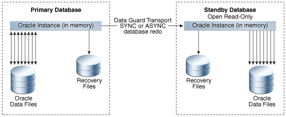
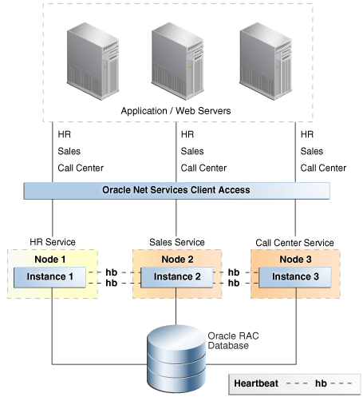
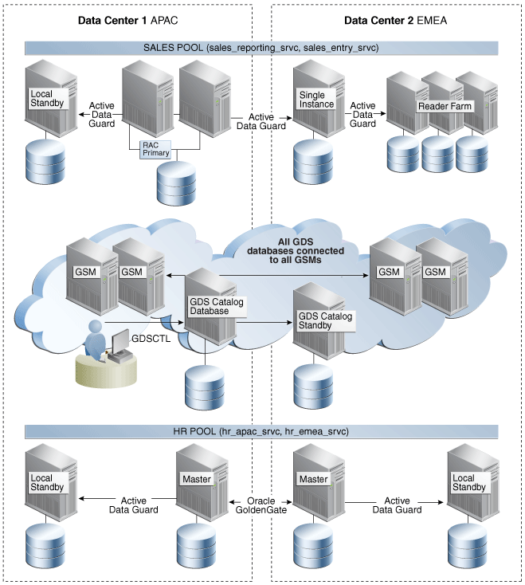

3 Features for Maximizing Availability
This chapter describes the Oracle Database features used in MAA solutions.
Topics:
- Oracle Data Guard
- Oracle GoldenGate
Oracle GoldenGate is Oracle's strategic logical replication solution for data distribution and data integration. - Best Practice: Oracle Active Data Guard and Oracle GoldenGate
- Recovery Manager
- Oracle Secure Backup
Oracle Secure Backup is a centralized backup management solution supporting disk and tape targets, providing heterogeneous data protection in distributed UNIX, Linux, Windows, and Network Attached Storage (NAS) environments. - Oracle Real Application Clusters and Oracle Clusterware
- Oracle RAC One Node
- Oracle Automatic Storage Management
- Fast Recovery Area
- Corruption Prevention, Detection, and Repair
- Data Recovery Advisor
- State Object Quarantine
State object quarantine enables the database instance to continue operating even if there are bad objects. - Oracle Security Features
- Oracle Flashback Technology
- Oracle Data Pump and Data Transport
- Oracle Replication Technologies for Non-Database Files
- Client and Application Failover
- Oracle Multitenant
Oracle Multitenant is the optimal database consolidation method from Oracle Database 12c onward. The multitenant architecture combines the best attributes of each of the previous consolidation methods without their accompanying tradeoffs. - Oracle Sharding
Oracle Sharding is a scalability and availability feature for custom-designed OLTP applications explicitly designed to run on a sharded database. - Oracle Restart
- Oracle Site Guard
- Zero Data Loss Recovery Appliance
See Also:
-
The overview of high availability in Oracle Database Concepts
-
The list of new high availability features in Oracle Database New Features Guide
3.1 Oracle Data Guard
Oracle Data Guard ensures high availability, data protection, and disaster recovery for enterprise data. Data Guard provides a comprehensive set of services that create, maintain, manage, and monitor one or more standby databases to enable Oracle databases to survive outages of any kind, including natural disasters and data corruptions. A Data Guard standby database is an exact replica of the production database and thus can be transparently utilized in combination with traditional backup, restoration, flashback, and cluster techniques to provide the highest possible level of data protection and data availability. Data Guard is included in Oracle Enterprise Edition.
A Data Guard configuration consists of one primary database and one or more standby databases. A primary database can be either a single-instance Oracle database or an Oracle RAC database. Similar to a primary database, a standby database can be either a single-instance Oracle database or an Oracle RAC database. Using a backup copy of the primary database, you can create up to 30 standby databases that receive redo directly from the primary database. Optionally you can use a cascaded standby to create Data Guard configurations where the primary transmits redo to a single remote destination, and that destination forwards redo to multiple standby databases. This enables a primary database to efficiently synchronize many more than 30 standby databases if desired.
Note:
Oracle Active Data Guard is an extension of basic Data Guard providing advanced features that off-load various types of processing from a production database, extend zero data loss protection over any distance, and that enhance high availability. Oracle Active Data Guard is licensed separately from Oracle Database Enterprise Edition. Oracle Active Data Guard is discussed more completely in Oracle Active Data Guard.
There are several types of standby databases. Data Guard physical standby database is the MAA best practice for data protection and disaster recovery and is the most common type of standby database used. A physical standby database uses Redo Apply (an extension of Oracle media recovery) to maintain an exact, physical replica of the production database. When configured using MAA best practices, Redo Apply uses multiple Oracle-aware validation checks to prevent corruptions that can impact a primary database from impacting the standby. Other types of Data Guard standby databases include: snapshot standby (a standby open read/write for test or other purposes) and logical standby (used to reduce planned downtime).
Benefits of Using Data Guard
-
Continuous Oracle-aware validation of all changes using multiple checks for physical and logical consistency of structures within an Oracle data block and redo, before updates are applied to a standby database. This isolates the standby database and prevents it from being impacted by data corruptions that can occur on the primary system.
-
Transparent operation: There are no restrictions on the use of Data Guard physical standby for data protection. Redo Apply supports all data and storage types, all DDL operations, and all applications (custom and packaged applications), and guarantees data consistency across primary and standby databases.
-
Highest performance: Fast redo transport for best recovery point objective, fast apply performance for best recovery time objective. With Oracle Database 12c Release 2, multi-instance redo apply provides Oracle RAC scalability for redo apply, eliminating bottlenecks of a single database server. Redo apply can essentially scale up to available CPU, I/O, and network across your Oracle RAC cluster. An observed redo apply rate of 3500 MB per second (12 TB/hour) on 8 node RAC Exadata.
-
Fast failover to a standby database to maintain availability should the primary database fail for any reason. Failover is either a manual or automatic operation depending on how Data Guard is configured.
-
Integrated client notification framework to enable application clients to connect to a new primary database after a failover occurs.
-
Automatic or automated (depending upon configuration) resynchronization of a failed primary database, quickly converting it to a synchronized standby database after a failover occurs.
-
Choice of flexible data protection levels to support all network configurations, availability and performance SLAs, and business requirements.
-
Management of a primary and all of its standby databases as a single configuration to simplify management and monitoring using either the Data Guard Broker command-line interface or Oracle Enterprise Manager Cloud Control.
-
Data Guard Broker 12c greatly improves manageability with additional features for comprehensive configuration health checks, resumable switchover operations, streamlined role transitions, support for cascaded standby configurations, and user-configurable thresholds for transport and apply lag to automatically monitor the ability of the configuration to support SLAs for recovery point and recovery time objectives at any instant in time.
-
Efficient transport to multiple remote destinations using a single redo stream originating from the primary production database and forwarded by a cascading standby database.
-
Snapshot Standby enables a physical standby database to be open read/write for testing or any activity that requires a read/write replica of production data. A snapshot standby continues to receive but does not apply updates generated by the primary. When testing is complete, a snapshot standby is converted back into a synchronized physical standby database by first discarding the changes made during the open read/write, and then applying the redo received from the primary database. Primary data is always protected. Snapshot standby is particularly useful when used in conjunction with Oracle Real Application Testing (workload is captured at the production database for replay and subsequent performance analysis at the standby database-an exact replica of production).
-
Reduction of planned downtime by utilizing a standby database to perform maintenance in rolling fashion. The only downtime is the time required to perform a Data Guard switchover; applications remain available while the maintenance is being performed. (See When to Use Oracle Active Data Guard and Oracle GoldenGate Together and Table 5-7 for more details).
-
Increased flexibility for Data Guard configurations where the primary and standby systems may have different CPU architectures or operating systems subject to limitations defined in My Oracle Support note 413484.1.
-
Efficient disaster recovery for a container database (CDB). Data Guard failover and switchover completes using a single command at a CDB level regardless of how many pluggable databases (PDBs) are consolidated within the CDB.
-
Enables a specific administration privilege, SYSDG, to handle standard administration duties for Data Guard. This new privilege is based on the least privilege principle, in which a user is granted only the necessary privileges required to perform a specific function and no more. The SYSDBA privilege continues to work as in previous releases.
-
The Oracle Database In-Memory column store is supported on standby databases in an Active Data Guard environment. (new in Oracle 12c Release 2)
-
Further improves performance and availability of Data Warehouses in a Data Guard configuration by tracking information from
NOLOGGINGoperations so they can be repaired with the new RMAN commandRECOVER DATABASE NOLOGGING. (new in Oracle 12c Release 2) -
Improves the impact multiple SYNC transport destinations have on the primary database through the use of a new parameter
DATA_GUARD_SYNC_LATENCY. This parameter defines the maximum amount of time (in seconds) that the Primary database must wait before disconnecting subsequent destinations after at least one synchronous standby has acknowledged receipt of the redo. (new in Oracle 12c Release 2) -
Data Guard Broker improves manageability by supporting destinations of different Endianess than the primary in addition to enhancing management of alternate destinations. (new in Oracle 12c Release 2)
-
Data Guard improves protection and Return To Operations (RTO) and Recovery Point Objectives (RPO) through multiple features (new in Oracle 12c Release 2) including:
-
Multi Instance Redo Apply (MIRA) provides scalable redo apply performance across Oracle RAC instances reducing RTO for even higher production OLTP or batch workloads
-
Compare primary and standby database blocks using the new
DBMS_DBCOMPpackage to help identify lost writes so they can be resolved efficiently. -
Fast Start Failover (FSFO) has the robustness of highly available zero data loss configurations with support for Maximum Protection mode while giving the flexibility of multiple observers and multiple failover targets for high availability in any configuration. FSFO can also be configured to automatically fail over to the standby with the detection of a lost write on the primary .
-
RPO is improved with no data loss failovers after a storage failure in ASYNC configurations and Data Guard Broker support for Application Continuity, improving the user experience during Data Guard role transitions.
-
-
Oracle Data Guard Broker further improves the management of databases by supporting destinations of different endianness than the primary in addition to enhancing management of alternate archive destinations when the primary destination is unavailable.
Topics:
3.1.1 Oracle Active Data Guard
Oracle Active Data Guard is Oracle's strategic solution for real time data protection and disaster recovery for the Oracle database using a physical replication process. Oracle Active Data Guard also provides high return on investment in disaster recovery systems by enabling a standby database to be open read-only while it applies changes received from the primary database. Oracle Active Data Guard is a separately licensed product that provides advanced features that greatly expand Data Guard capabilities included with Oracle Enterprise Edition.
Figure 3-1 Oracle Active Data Guard Architecture
Description of "Figure 3-1 Oracle Active Data Guard Architecture"
Oracle Active Data Guard enables administrators to improve performance by offloading processing from the primary database to a physical standby database that is open read-only while it applies updates received from the primary database. Offload capabilities of Oracle Active Data Guard 12c were enhanced to include read-only reporting and ad-hoc queries (including DML to global temporary tables and unique global or session sequences), data extracts, fast incremental backups, redo transport compression, efficient servicing of multiple remote destinations, and the ability to extend zero data loss protection to a remote standby database without impacting primary database performance. Oracle Active Data Guard also increases high availability by performing automatic block repair and enabling High Availability Upgrades (new automation in Oracle Database 12c for more easily implementing database rolling upgrades).
Note:
Oracle Active Data Guard is licensed separately as a database option license for Oracle Database Enterprise Edition. All Oracle Active Data Guard capabilities are also included in an Oracle Golden Gate license for Oracle Enterprise Edition. This provides customers with the choice of a standalone license for Oracle Active Data Guard, or licensing Oracle GoldenGate to acquire access to all advanced Oracle replication capabilities.
Benefits of Oracle Active Data Guard
Oracle Active Data Guard inherits all of the benefits previously listed for Data Guard, plus the following:
-
Improves primary database performance: Production-offload to an Oracle Active Data Guard standby database of read-only applications, reporting, and ad hoc queries. Any application compatible with a read-only database can run on an Oracle Active Data Guard standby. Oracle also provides integration that enables the offloading of many Oracle E-Business Suite Reports, PeopleTools reporting, Oracle Business Intelligence Enterprise Edition (OBIEE), and Oracle TopLink applications to an Oracle Active Data Guard standby database.
-
Oracle Active Data Guard 12c provides new support for DML to global temporary tables and the use of sequences at the standby database. This significantly expands the number of read-only applications that can be off-loaded from production databases to an Oracle Active Data Guard standby database.
-
The unique ability to easily scale read performance using multiple Oracle Active Data Guard standby databases, also referred to as a Reader Farm.
-
Production-offload of data extracts using Oracle Data Pump or other methods that read directly from the source database.
-
Production-offload of the performance impact from network latency in a synchronous, zero data loss configuration where primary and standby databases are separated by hundreds or thousands of miles. Oracle Active Data Guard 12c far sync utilizes a lightweight instance (control file and archive log files, but no recovery and no data files), deployed on a system independent of the primary database. The far sync instance is ideally located at the maximum distance from the primary system that an application can tolerate the performance impact of synchronous transport to provide optimal protection. Data Guard transmits redo synchronously to the far sync instance and far sync forwards the redo asynchronously to a remote standby database that is the ultimate failover target. If the primary database fails, the same failover command used for any Data Guard configuration, or mouse click using Oracle Enterprise Manager Cloud Control, or automatic failover using Data Guard Fast-Start Failover executes a zero data loss failover to the remote destination. This transparently extends zero data loss protection to a remote standby database just as if it were receiving redo directly from the primary database, while avoiding the performance impact to the primary database of WAN network latency in a synchronous configuration.
-
Production-offload of the overhead of servicing multiple remote standby destinations using far sync. In a far sync configuration, the primary database ships a single stream of redo to a far sync instance using synchronous or asynchronous transport. The far sync instance is able to forward redo asynchronously to as many as 29 remote destinations with zero incremental overhead on the source database.
-
Data Guard maximum availability supports the use of the
NOAFFIRMredo transport attribute. A standby database returns receipt acknowledgment to its primary database as soon as redo is received in memory. The standby database does not wait for the Remote File Server (RFS) to write to a standby redo log file.This feature provides increased primary database performance in Data Guard configurations using maximum availability and SYNC redo transport. Fast Sync isolates the primary database in a maximum availability configuration from any performance impact due to slow I/O at a standby database. This new FAST SYNC feature can work with a physical standby target or within a far sync configuration.
-
Production-offload of CPU cycles required to perform redo transport compression. Redo transport compression can be performed by the far sync instance if the Data Guard configuration is licensed for Oracle Advanced Compression. This conserves bandwidth with zero incremental overhead on the primary database.
-
Production-offload and increased backup performance by moving fast incremental backups off of the primary database and to the standby database by utilizing Oracle Active Data Guard support for RMAN block change tracking.
-
Increased high availability using Oracle Active Data Guard automatic block repair to repair block corruptions, including file header corruptions, detected at either the primary or standby, transparent to applications and users.
-
Increased high availability by reducing planned downtime for upgrading to new Oracle Database patch sets and database releases using the additional automation provided by high availability Upgrade, new with Oracle Active Data Guard 12c
-
Connection preservation on an Active Data Guard standby through a role change facilitates improved reporting and improves the user experience. The connections pause while the database role changes to a primary database and resume, improving the user experience.
-
The Oracle Enterprise Manager Diagnostic tool can be used with Active Data Guard to capture and send performance data to the Automatic Workload Repository, while the SQL Tuning Advisor allows primary database SQL statement tuning to be offloaded to a standby database.
-
Active Data Guard support for the Oracle Database In-Memory option enables reporting to be offloaded to the standby database while reaping the benefits the In-Memory option provides, including tailored column stores for the standby database workload.
3.1.2 Data Guard Advantages Over Traditional Solutions
Data Guard provides a number of advantages over traditional solutions, including the following:
-
Fast, automatic or automated database failover for data corruptions, lost writes, and database and site failures, with recovery times of potentially seconds with Data Guard as opposed to hours with traditional solutions
-
Zero data loss over wide area network using Oracle Active Data Guard Far Sync
-
Offload processing for redo transport compression and redo transmission to up to 29 remote destinations using Oracle Active Data Guard Far Sync
-
Automatic corruption repair automatically replaces a physical block corruption on the primary or physical standby by copying a good block from a physical standby or primary database
-
Most comprehensive protection against data corruptions and lost writes on the primary database
-
Reduced downtime for storage, Oracle ASM, Oracle RAC, system migrations and some platform migrations, and changes using Data Guard switchover
-
Reduced downtime with Data Guard rolling upgrade capabilities
-
Ability to off-load primary database activities—such as backups, queries, or reporting—without sacrificing the RTO and RPO ability to use the standby database as a read-only resource using the real-time query apply lag capability, including Database In-Memory column support in Oracle Database 12c Release 2
-
Ability to integrate non-database files using Oracle Database File System (DBFS) or Oracle Automatic Storage Management Cluster File System (Oracle ACFS) as part of the full site failover operations (see Oracle Replication Technologies for Non-Database Files)
-
No need for instance restart, storage remastering, or application reconnections after site failures
-
Transparency to applications
-
Transparent and integrated support (application continuity and transaction guard) for application failover
-
Effective network utilization
-
Database In-Memory support
-
Integrated service and client failover that reduces overall application RTO
-
Enhanced and integrated Data Guard awareness with existing Oracle technologies such as Oracle RAC, RMAN, Oracle GoldenGate, Enterprise Manager, health check (orachk), DBCA.
For data resident in Oracle databases, Data Guard, with its built-in zero-data-loss capability, is more efficient, less expensive, and better optimized for data protection and disaster recovery than traditional remote mirroring solutions. Data Guard provides a compelling set of technical and business reasons that justify its adoption as the disaster recovery and data protection technology of choice, over traditional remote mirroring solutions.
3.1.3 Data Guard and Planned Maintenance
Data Guard standby databases can be used to reduce planned downtime by performing maintenance in a rolling fashion. Changes are implemented first at the standby database. The configuration is allowed to run with the primary at the old version and standby at the new version until there is confidence that the new version is ready for production. A Data Guard switchover is then performed, transitioning production to the new version. The only database downtime is the time required to perform the switchover.
There are several approaches to performing maintenance in a rolling fashion using a Data Guard standby. Customer requirements and preferences determine which approach is used. The following approaches are discussed in this document:
Topics:
3.1.3.1 Data Guard Redo Apply and Standby-First Patching
Beginning with Oracle Database 10g, there has been increased flexibility in cross-platform support using Data Guard Redo Apply. In certain Data Guard configurations, primary and standby databases are able to run on systems having different operating systems (for example, Windows and Linux), word size (32bit/64bit), or hardware architectures. Redo Apply can also be used to migrate to Oracle Automatic Storage Management (ASM), to move from single instance Oracle databases to Oracle RAC, to perform technology refresh, or to move from one data center to the next.
Beginning with Oracle Database 11g Release 2 (11.2), Standby-First Patch Apply (physical standby using Redo Apply) can support different software patch levels between a primary database and its physical standby database for the purpose of applying and validating Oracle patches in a rolling fashion. Patches eligible for Standby-First patching include:
-
Database Patch Set Update (PSU)
-
Database Critical Patch Update (CPU)
-
Database bundled patch
-
Oracle Exadata Database Machine bundled patch
-
Exadata Storage Server Software patch
-
Any operating system, system firmware, or system changes compatible with the existing Oracle database version
Standby-First Patch Apply is supported for certified software patches for Oracle Database Enterprise Edition 11g Release 2 (11.2) and later.
In each of the types of planned maintenance previously described, the configuration begins with a primary and physical standby database (in the case of migration to a new platform, or to ASM or Oracle RAC, the standby is created on the new platform). After all changes are implemented at the physical standby database, Redo Apply (physical replication) is used to synchronize the standby with the primary. A Data Guard switchover is used to transfer production to the standby (the new environment).
See Also:
-
My Oracle Support Note 413484.1 for information about mixed platform combinations supported in a Data Guard configuration.
-
My Oracle Support Note 1265700.1 for more information about Standby First Patch Apply and the README for each patch to determine if a target patch is certified as being a Standby-First Patch.
3.1.3.2 Data Guard Transient Logical Rolling Upgrades
There are numerous types of maintenance tasks that are unable to use Redo Apply (physical replication) to synchronize the original version of a database with the changed or upgraded version. These tasks include:
-
Database patches or upgrades that are not Standby-First Patch Apply-eligible. This includes database patch-sets (11.2.0.2 to 11.2.0.4) and upgrade to new Oracle Database releases (11.2.0.4 to 12.1.0.1 or 12.2).
-
Maintenance must be performed that modifies the physical structure of a database that would require downtime (for example, adding partitioning to non-partitioned tables, changing Basicfile LOBs to Securefile LOBs, changing XML-CLOB to Binary XML, or altering a table to be OLTP-compressed).
All of the previous types of maintenance can be performed in a rolling fashion using a Data Guard standby database by using Data Guard SQL Apply (logical replication) to synchronize the old and new versions of the database. Prior to Oracle Database 11g this required creating a logical standby database, performing the maintenance on the logical standby, resynchronizing the standby with the primary, and then switching over. Additionally if a physical standby was being used for disaster recovery, then a new physical standby database would have to be created from a backup of the production database at the new version. This represented a number of logistical and cost challenges when upgrading a multi-terabyte database.
Beginning with Oracle Database 11g, database rolling upgrades can use a new procedure called Transient Logical that begins and ends with a physical standby database. SQL Apply is only used during the phase when Data Guard is synchronizing across old and new versions. A new logical standby database does not need to be created if there is already a physical standby in place. A new physical standby database does not need to be created from a backup of the production database at the new version after the maintenance is complete. Similar to the traditional process of upgrading a Data Guard configuration having an in-place physical standby, the original primary is upgraded or changed using redo from the new primary database and Redo Apply (a single catalog upgrade migrates both primary and standby databases to the new Oracle release).
Transient Logical upgrades require that the primary database be at Oracle Database 11g release 1 (11.1) or later and that the database meet the pre-requisites of SQL Apply.
Oracle provides a Bourne shell script that automates a number of the manual steps required by the Transient Logical rolling upgrade process.
Databases that use Oracle Database Vault can be upgraded to new Oracle Database releases and patch sets by using Oracle Data Guard database rolling upgrades (transient logical standby only).
See Also:
http://www.oracle.com/goto/maa for Oracle MAA white paper “Oracle Database Rolling Upgrades: Using a Data Guard Physical Standby Database”
3.1.3.3 Rolling Upgrade Using Oracle Active Data Guard
Oracle Database 12c introduces rolling upgrade using Oracle Active Data Guard to provide a simpler, automated, and easily repeatable method for reducing planned downtime than represented by the manual Transient Logical rolling upgrade procedure previously described. Rolling upgrade using Oracle Active Data Guard transforms the 42 or more steps required by the manual procedure into several easy-to-use DBMS_ROLLING PL/SQL packages. Rolling upgrades performed using the DBMS_ROLLING PL/SQL package are supported on a multitenant container database (CDB).
A rolling upgrade using Oracle Active Data Guard uses the following steps:
-
Call
DBMS_ROLLING.INIT_PLAN-
Generates an upgrade plan with a configuration-specific set of instructions to guide the administrator through the upgrade process
-
-
Call
DBMS_ROLLING.SET_PARAMETER-
Modifies parameters of the rolling upgrade
-
-
Install new software at all databases participating in the upgrade
-
Call
DBMS_ROLLING.START_PLAN-
Configures primary and standby databases participating in the upgrade
-
-
Upgrade or make changes to the standby database
-
Call
DBMS_ROLLING.SWITCHOVER-
Switchover moves the production to the new version
-
Switchover is the only downtime required
-
-
Restart former primary using new binaries if appropriate
-
Call
DBMS_ROLLING.FINISH_PLAN-
Completes the upgrade of the old primary and any additional standby databases in the Data Guard configuration and resynchronizes with the new primary
-
Rolling upgrade using Oracle Active Data Guard has the following benefits:
-
Provides a simple specify-compile-execute protocol
-
Catches configuration errors at the compilation step
-
Runtime errors are detected during execution
-
-
The state is kept in the database
-
Enables a reliable, repeatable process
-
-
Runtime steps are constant regardless of how many databases are involved
-
Handles failure at the original primary database
-
Enables data protection for the upgraded primary at all times
Rolling upgrade using Oracle Active Data Guard requires an Oracle Active Data Guard license, the primary database be at Oracle Database 12c Release 1 (12.1) or later, and that the database satisfy prerequisites of SQL Apply. If the primary database is on an earlier Oracle Database release, use a Data Guard physical standby database.
See Also:
http://www.oracle.com/goto/maa for Oracle MAA white paper “Oracle Database Rolling Upgrades: Using a Data Guard Physical Standby Database”
3.2 Oracle GoldenGate
Unlike replication solutions from other vendors, Oracle GoldenGate is more closely integrated with Oracle Database while also providing an open, modular architecture ideal for replication across heterogeneous database management systems. This combination of attributes eliminates compromise, making Oracle GoldenGate the preferred replication solution for addressing requirements that span Oracle Database and non-Oracle Database environments.
A typical environment includes a capture, pump, and delivery process. Each of these processes can run on most of the popular operating systems and databases, including Oracle Database and non-Oracle databases. All or a portion of the data can be replicated, and the data within any of these processes can be manipulated for not only heterogeneous environments but also different database schemas, table names, or table structures. Oracle GoldenGate also supports bidirectional replication with preconfigured conflict detection and resolution handlers to aid in resolving data conflicts.
Topics:
- Oracle GoldenGate 12c
- Oracle GoldenGate and Maximum Availability Architecture
Oracle GoldenGate logical replication enables all databases in an Oracle GoldenGate configuration, both source and target databases, to be open read-write. - Oracle GoldenGate with Oracle Real Application Clusters
When using Oracle Real Application Clusters (RAC), Oracle GoldenGate can be configured so that it seamlessly moves between Oracle RAC nodes in the event of database instance failure or during applicable maintenance operations.
3.2.1 Oracle GoldenGate 12c
Oracle GoldenGate 12c Release 2 offers significant new features that greatly enhance its replication capabilities and integration with Oracle Database. The new features include:
-
End-to-end replication lag provides end-to-end replication lag views without requiring you to manually implement tables that must be continually updated. New commands are available to simplify this replication configuration and provide extra features including:
-
Unidirectional lag from source to target
-
Bidirectional lag when you set up an active-active replication that provides both incoming and outgoing lag
-
The
GG_LAGdatabase view to view the end-to-end lag information
-
-
Automated remote trail file recovery by pump automatically handles when a target system is restored to a previous point in time. This feature also handles most cases where target trail files are inadvertently deleted or corrupted by automatically regenerating the missing target trail data when the source trail data is available, and by intelligently skipping any duplicate transactions when applying the change data.
-
You can continue using GGSCI to start and stop the manager when GoldenGate processes are under Oracle Grid Infrastructure Agents (XAG) management with
XAGENABLE. -
If Extract is configured in a downstream deployment, where redo is shipped from the source database to be mined on the downstream database, it is possible to fetch any required data from an active standby database instead of using the source database. Fetching is done when Extract is unable to reconstruct an update operation from the redo data, or when a
FETCHCOLSclause is specified as part of the TABLE parameter. -
A new Extract parameter,
TRANLOGOPTIONS HANDLEDLFAILOVER, only permits extract from redo data that has been applied to the Oracle Data Guard standby. When an Oracle GoldenGate source database, where integrated Extract is connected, is protected by an active standby database, where there is a potential for data loss (Data Guard Maximum Performance Mode using ASYNC redo transport), it is important to ensure Extract will not extract redo data that has not yet been applied to the standby database. Doing so leads to logical data inconsistencies in the event of a data loss failover because the Oracle GoldenGate target database will contain data that is missing from the source database.
See Also:
Administering Oracle GoldenGate for Windows and UNIX for information about monitoring replication lag
Fusion Middleware Reference for Oracle GoldenGate for Windows and UNIX for information about XAGENABLE
Fusion Middleware Reference for Oracle GoldenGate for Windows and UNIX for information about FETCHUSERID and FETCHUSEDIDALIAS
http://www.oracle.com/goto/maa for Oracle MAA white paper “Transparent Role Transitions With Oracle Data Guard and Oracle GoldenGate”
3.2.2 Oracle GoldenGate and Maximum Availability Architecture
-
Zero or near zero downtime maintenance. In this architecture, Oracle GoldenGate provides greater flexibility than the capabilities provided by Data Guard. Oracle GoldenGate source and target databases can have a different physical and logical structure, can reside on different hardware and operating system architectures, can span wide differences in Oracle Database releases (for example, 9i to 12c), or be a mix of Oracle and non-Oracle systems. This allows for the modernization of 24x7 servers and allows new Oracle features to be implemented without impacting the availability of the databases. Maintenance is first performed on a target database while production runs on the source. After the maintenance is complete, production can be moved to the source all at once, similar to a Data Guard switchover. Optionally, bidirectional replication can be used to gradually move users over to the new system to create the perception of zero downtime. In either case, Oracle GoldenGate replication can be enabled in the reverse direction to keep the original source database synchronized during a transition period, making it simple to effect a planned fall-back to the previous version if needed, with minimal downtime and no data loss.
-
Zero or near-zero downtime migrations when a Data Guard solution is not applicable. Platform or database migrations can be carried out using Oracle GoldenGate as the data synchronization method between the old and new systems. Once the database has been instantiated on another host, Oracle GoldenGate is configured to replicate changes from the production database. A guaranteed restore point can be created on the migrated database so that after user testing the database can be flashed back, and Oracle GoldenGate can apply any outstanding data changes from the production database before moving the application users to the new database, similar to a snapshot standby database. If desired, bi-directional replication can also be configured from the migrated database back to the production database for use as a fallback solution.
-
Zero or near-zero downtime application upgrades. Application upgrades that modify back-end database objects typically result in significant planned downtime while maintenance is being performed. Oracle GoldenGate replication enables data transformations that map database objects used by a previous version of an application to objects modified by the new version of an application. This enables database maintenance to be performed on a separate copy of the production database without impacting the availability of the application. After the maintenance is complete and Oracle GoldenGate has finished synchronizing old and new versions, users can be switched to the new version of the application.
-
Oracle GoldenGate enables read-write access to a replica database while it is being synchronized with its source database. This is most often used to offload reporting to a copy of a production database when the reporting application requires a read-write connection to database in order to function. This is also relevant to disaster recovery environments where the nature of the technology used for the application tier requires an active read-write connection to the DR database at all times in order to meet recovery time objectives.
-
Active-Active replication. Oracle GoldenGate supports an active-active multi-directional configuration, where there are two or more systems with identical sets of data that can be changed by application users on either system. Oracle GoldenGate replicates transactional data changes from each database to the others to keep all sets of data current.
See Also:
3.2.3 Oracle GoldenGate with Oracle Real Application Clusters
When using Oracle Real Application Clusters (RAC), Oracle GoldenGate can be configured so that it seamlessly moves between Oracle RAC nodes in the event of database instance failure or during applicable maintenance operations.
This ability provides high availability with Oracle GoldenGate and it is possible to patch and upgrade the Oracle GoldenGate software on one or more nodes in the cluster without affecting the node where Oracle GoldenGate is currently running. Then at a predetermined time, Oracle GoldenGate can be switched to one of the upgraded nodes. The switch is done without reconfiguring Oracle GoldenGate because configuration information is shared across the Oracle RAC cluster.
See Also:
http://www.oracle.com/goto/maa for Oracle MAA white paper “Oracle GoldenGate with Oracle Real Application Clusters Configuration”
3.3 Best Practice: Oracle Active Data Guard and Oracle GoldenGate
While Oracle Active Data Guard and Oracle GoldenGate are each capable of maintaining a synchronized copy of an Oracle database, each has unique characteristics that result in high availability architectures that can use one technology or the other, or both at the same time, depending upon requirements. Examples of MAA Best Practice guidelines for use cases relevant to Oracle Database 12c are as follows:
Topics:
3.3.1 When to Use Oracle Active Data Guard
Use Oracle Active Data Guard when the emphasis is on simplicity, data protection, and availability:
-
Simplest, fastest, one-way replication of a complete Oracle database.
-
No restrictions: Data Guard Redo Apply supports all data and storage types and Oracle features; transparent replication of DDL
-
Features optimized for data protection: Detects silent corruptions that can occur on source or target; automatically repairs corrupt blocks
-
Synchronized standby open read-only provides simple read-only offloading for maximum ROI
-
Transparency of backups: A Data Guard primary and standby are physically exact copies of each other; RMAN backups are completely interchangeable
-
Zero data loss protection at any distance, without impacting database performance
-
Minimizing planned downtime and risk using standby first patching, database rolling upgrades, and select platform migrations
-
Reduce risk of introducing change by dual purposing a DR system for testing using Data Guard Snapshot Standby
-
Integrated automatic database and client failover
-
Integrated management of a complete configuration: Data Guard Broker command line interface or Oracle Enterprise Manager Cloud Control
3.3.2 When to Use Oracle GoldenGate
Use Oracle GoldenGate when the emphasis is on advanced replication requirements not addressed by Oracle Active Data Guard:
-
Any requirement where the replica database must be open read/write while synchronizing with the primary database
-
Any data replication requirements such as multimaster and bidirectional replication, subset replication, many-to-one replication, and data transformations.
-
When data replication is required between endian format platforms or across-database major versions.
-
Maintenance and migrations where zero downtime or near zero downtime is required. Oracle GoldenGate can be used to migrate between application versions, for example, from Application 1.0 to Application 2.0 without downtime.
-
Database rolling upgrades where it is desired to replicate from new version down to the old version for the purpose of fast fall-back if something is wrong with the upgrade.
-
Zero downtime planned maintenance where bidirectional replication is used to gradually migrate users to the new version, creating the perception of zero downtime. Note that bidirectional replication requires avoiding or resolving update conflicts that can occur on disparate databases.
3.3.3 When to Use Oracle Active Data Guard and Oracle GoldenGate Together
Oracle Active Data Guard and Oracle GoldenGate are not mutually exclusive. The following are use cases of high availability architectures that include the simultaneous use of Oracle Active Data Guard and Oracle GoldenGate:
-
An Oracle Active Data Guard standby is utilized for disaster protection and database rolling upgrades for a mission critical OLTP database. At the same time, Oracle GoldenGate is used to replicate data from the Data Guard primary database (or from the standby database using Oracle GoldenGate ALO mode) for ETL update of an enterprise data warehouse.
-
Oracle GoldenGate subset replication is used to create an operational data store (ODS) that extracts, transforms, and aggregates data from numerous data sources. The ODS supports mission critical application systems that generate significant revenue for the company. An Oracle Active Data Guard standby database is used to protect the ODS, providing optimal data protection and availability.
-
Oracle GoldenGate bidirectional replication is utilized to synchronize two databases separated by thousands of miles. User workload is distributed across each database based upon geography, workload, and service level using Oracle 12c Global Data Services (GDS). Each Oracle GoldenGate copy has its own local synchronous Data Guard standby database that enables zero data loss failover if an outage occurs. Oracle GoldenGate capture and apply processes are easily restarted on the new primary database following a failover because the primary and standby are an exact, up-to-date replica of each other.
-
An Oracle Active Data Guard standby database used for disaster protection is temporarily converted into an Oracle GoldenGate target for the purpose of performing planned maintenance not supported by Data Guard. For example, a Siebel application upgrade requiring modification of back-end database objects which require comprehensive testing before switching users over to the new system.
-
Oracle Active Data Guard is used to protect a production environment when a major database version upgrade is required offering zero or near-zero downtime (for example, Oracle 11.2.0.3 to 12c.) A second primary/standby environment is created using the new database version, and Oracle GoldenGate is used to replicate data from the production environment to the copy with one-way or bidirectional replication. When Oracle GoldenGate has completed synchronizing the old and new environments, production is switched to the new environment and the old environment is decommissioned. This provides zero or minimal downtime depending upon configuration, eliminates risk by providing complete isolation between the old and new environment, and avoids any impact to data protection and availability SLAs if problems are encountered during the upgrade process.
See Also:
http://www.oracle.com/goto/maa for Oracle MAA Best Practices white paper ““Transparent Role Transitions With Oracle Data Guard and Oracle GoldenGate"
3.4 Recovery Manager
Recovery Manager (RMAN) provides a comprehensive foundation for efficiently backing up and recovering the database. RMAN eliminates operational complexity while providing superior performance and availability of the database.
RMAN determines the most efficient method of executing the requested backup, restoration, or recovery operation and then submits these operations to the Oracle Database server for processing. RMAN and the server automatically identify modifications to the structure of the database and dynamically adjust the required operation to adapt to the changes.
RMAN is the standard interface to backup and restore from Recovery Appliance, local disk (ZFS storage), tape, and cloud object store.
RMAN provides the following benefits:
-
Support for Oracle Sharding - RMAN support for every independent database (shard) (new in Oracle Database 12c Release 2)
-
Enhancement for Sparse Databases - allows backup and restore to operate on
SPARSEbackup sets and or image copies (new in Oracle Database 12c Release 2) -
Over the Network Standby Database repair of
NONLOGGEDoperation - new syntax for validation and repair on Standby -VALIDATE/RECOVER .. NONLOGGED BLOCK;(new in Oracle Database 12c Release 2) -
RMAN DUPLICATEfeature enhanced to support creation of Far Sync from Primary and backup (new in Oracle Database 12c Release 2) -
RMAN DUPLICATEUsing Encrypted Backups - RMAN enhanced support non Auto-login wallet based encrypted backups with a newSETcommand - enables interrupt-free cloning (new in Oracle Database 12c Release 2) -
Support for cross-platform backup and restore over the network (new in Oracle Database 12c Release 2)
-
Network-enabled restoration allows the
RESTOREoperations to copy data files directly from one database to another over the network -
Simplified table restoration with the
RECOVER TABLEcommand -
Support for Oracle Multitenant, including backup and recovery of individual pluggable databases
-
Support for cross-platform Oracle Multitenant, including backup and recovery of individual PDBs (new in Oracle Database 12c Release 2)
-
Automatic channel failover on backup and restore operations
-
Automatic failover to a previous backup when the restore operation discovers a missing or corrupt backup
-
Automatic creation of new database files and temporary files during recovery
-
Automatic recovery through a previous point-in-time recovery—recovery through reset logs
-
Block media recovery, which enables the data file to remain online while fixing the block corruption
-
Fast incremental backups using block change tracking
-
Fast backup and restore operations with intrafile and interfile parallelism
-
Enhanced security with a virtual private recovery catalog
-
Merger of incremental backups into image copies, providing up-to-date recoverability
-
Optimized backup and restoration of required files only
-
Retention policy to ensure that relevant backups are retained
-
Ability to resume backup and restore operations in case of failure
-
Automatic backup of the control file and the server parameter file, ensuring that backup metadata is available in times of database structural changes and media failure and disasters
-
Easily reinstantiate a new database from an existing backup or directly from the production database (thus eliminating staging areas) using the
DUPLICATEcommand.
3.5 Oracle Secure Backup
Oracle Secure Backup is a centralized backup management solution supporting disk and tape targets, providing heterogeneous data protection in distributed UNIX, Linux, Windows, and Network Attached Storage (NAS) environments.
By protecting file system and Oracle Database data, Oracle Secure Backup provides a complete tape backup solution for your IT environment.
Oracle Secure Backup is tightly integrated with RMAN to provide the media management layer for RMAN. With optimized integration points, Oracle Secure Backup and RMAN provide the fastest and most efficient tape backup capability for Oracle Database.
You can back up distributed servers to local and remote tape or disk devices from a central Oracle Secure Backup administrative server using backup policies, calendar-based scheduling for lights out operations, or on-demand backup for immediate requirements. With its highly scalable client/server architecture, Oracle Secure Backup provides local and remote data protection, using Secure Sockets layer (SSL) for secure intradomain communication and two-way server authentication.
Oracle Secure Backup provides the following benefits:
-
Optimized performance achieving 25-40% faster Oracle Database backups than comparable media management products with up to 10% less CPU utilization
-
Unused block and undo block compression
-
Shared tape buffers with RMAN
-
-
Policy-based management that allows backup administrators to exercise precise control over the backup domain
-
Dynamic drive sharing for increased tape resource use
-
Heterogeneous Storage Area Network (SAN) support, enabling NAS, UNIX, Windows, and Linux to share tape drives and media
-
File system backup at the file, directory, file system, or raw partition level with full, incremental, and offsite backup scheduling
-
Integration with Oracle Enterprise Manager, providing an intuitive, familiar interface
-
Backup encryption to tape with policy-based encryption key management leveraging either Oracle Secure Backup host-based encryption or hardware encryption (tape drive)
-
Broad tape-device support for new and legacy tape devices in SAN and SCSI environments
-
Disk-pool devices to use disk volumes as a backup target
-
Network Data Management Protocol (NDMP) support for highly efficient backup of NAS files
-
Scalable, low-cost licensing model that reduces IT costs and operational considerations
-
Enhanced data throughput Reliable Datagram Socket over Remote Direct Memory Access (RDS/RDMA) over InfiniBand networks for maximum backup and restore performance in Exadata Database Machine environments
-
Oracle-aware backup and restoration on Non-Uniform Memory Access (NUMA) machines, ensuring OSB and Oracle Database background processes communicate in the same NUMA region for optimal performance
3.6 Oracle Real Application Clusters and Oracle Clusterware
Oracle RAC and Oracle Clusterware enable Oracle Database to run any packaged or custom application across a set of clustered servers. This capability provides the highest levels of availability and the most flexible scalability. If a clustered server fails, then Oracle Database continues running on the surviving servers. When more processing power is needed, you can add another server without interrupting access to data.
Oracle RAC enables multiple instances that are linked by an interconnect to share access to an Oracle database. In an Oracle RAC environment, Oracle Database runs on two or more systems in a cluster while concurrently accessing a single shared database. The result is a single database system that spans multiple hardware systems, enabling Oracle RAC to provide high availability and redundancy during failures in the cluster. Oracle RAC accommodates all system types, from read-only data warehouse systems to update-intensive online transaction processing (OLTP) systems.
Oracle Clusterware is software that, when installed on servers running the same operating system, enables the servers to be bound together to operate as if they are one server, and manages the availability of user applications and Oracle databases. Oracle Clusterware also provides all of the features required for cluster management, including node membership, group services, global resource management, and high availability functions:
-
For high availability, you can place Oracle databases (single-instance or Oracle RAC databases), and user applications (Oracle and non-Oracle) under the management and protection of Oracle Clusterware so that the databases and applications restart when a process fails or so that a failover to another node occurs after a node failure.
-
For cluster management, Oracle Clusterware presents multiple independent servers as if they are a single-system image or one virtual server. This single virtual server is preserved across the cluster for all management operations, enabling administrators to perform installations, configurations, backups, upgrades, and monitoring functions. Then, Oracle Clusterware automatically distributes the execution of these management functions to the appropriate nodes in the cluster.
Oracle Clusterware is a requirement for using Oracle RAC. Oracle Clusterware is the only clusterware that you need for most platforms on which Oracle RAC operates. Although Oracle Database continues to support third-party clusterware products on specified platforms, using Oracle Clusterware provides these main benefits:
-
Dispenses with proprietary vendor clusterware
-
Uses an integrated software stack from Oracle that provides disk management with local or remote Oracle Automatic Storage Management (Oracle Flex ASM) to data management with Oracle Database and Oracle RAC
-
Can be configured in large clusters, called an Oracle Flex Cluster.
In addition, Oracle Database features, such as Oracle services, use the underlying Oracle Clusterware mechanisms to provide their capabilities.
Oracle Clusterware requires two clusterware components: a voting disk to record node membership information and the Oracle Cluster Registry (OCR) to record cluster configuration information. The voting disk and the OCR must reside on shared storage. Oracle Clusterware requires that each node be connected to a private network over a private interconnect.
Topics:
3.6.1 Benefits of Using Oracle Clusterware
Oracle Clusterware provides the following benefits:
-
Tolerates and quickly recovers from computer and instance failures.
-
Simplifies management and support by means of using Oracle Clusterware together with Oracle Database. By using fewer vendors and an all Oracle stack you gain better integration compared to using third-party clusterware.
-
Performs rolling upgrades for system and hardware changes. For example, you can apply Oracle Clusterware upgrades, patch sets, and interim patches in a rolling fashion.
When you upgrade to Oracle Database 12c, Oracle Clusterware and Oracle ASM binaries are installed as a single binary called the Oracle Grid Infrastructure. You can upgrade Oracle Clusterware in a rolling manner from Oracle Clusterware 10g and Oracle Clusterware 11g; however, you can only upgrade Oracle ASM in a rolling manner from Oracle Database 11g release 1 (11.1).
-
Automatically restarts failed Oracle processes.
-
Automatically manages the virtual IP (VIP) address. When a node fails, the node's VIP address fails over to another node on which the VIP address can accept connections.
-
Automatically restarts resources from failed nodes on surviving nodes.
-
Controls Oracle processes as follows:
-
For Oracle RAC databases, Oracle Clusterware controls all Oracle processes by default.
-
For Oracle single-instance databases, Oracle Clusterware enables you to configure the Oracle processes into a resource group that is under the control of Oracle Clusterware.
-
-
Provides an application programming interface (API) for Oracle and non-Oracle applications that enables you to control other Oracle processes with Oracle Clusterware, such as restart or react to failures and certain rules.
-
Manages node membership and prevents split-brain syndrome in which two or more instances attempt to control the database.
-
Using server weight-based node eviction allows for aligning the choice of which node gets evicted in case of certain failures in the cluster with business requirements, ensuring that the most important workload is kept alive for as long as possible, assuming an equal choice between servers.
-
Provides the ability to perform rolling release upgrades of Oracle Clusterware, with no downtime for applications.
3.6.2 Benefits of Using Oracle Real Application Clusters and Oracle Clusterware
Together, Oracle RAC and Oracle Clusterware provide all of the Oracle Clusterware benefits listed in Benefits of Using Oracle Clusterware plus the following benefits:
-
Provides better integration and support of Oracle Database by using an all Oracle software stack compared to using third-party clusterware.
-
Relocate Oracle Service automatically. Plus, when you perform additional fast application notification (FAN) and client configuration, distribute FAN events so that applications can react immediately to achieve fast, automatic, and intelligent connection and failover.
-
Detect connection failures fast and automatically, and remove terminated connections for any Java application using Oracle Universal Connection Pool (Oracle UCP) Fast Connection Failover and FAN events.
-
Balance work requests using Oracle UCP runtime connection load balancing.
-
Use runtime connection load balancing with Oracle UCP, Oracle Call Interface (OCI), and Oracle Data Provider for .NET (ODP.NET).
-
Distribute work across all available instances using load balancing advisory.
-
You can configure a database so that Oracle Clusterware is aware of the CPU requirements and limits for the given database. Oracle Clusterware uses this information to place the database resource only on servers that have a sufficient number of CPUs, amount of memory, or both.
-
Allow the flexibility to increase processing capacity using commodity hardware without downtime or changes to the application.
-
Provide comprehensive manageability integrating database and cluster features.
-
Provide scalability across database instances.
-
Implement Fast Connection Failover for nonpooled connections.
3.6.3 Oracle RAC Advantages Over Traditional Cold Cluster Solutions
-
Scalability across database instances
-
Flexibility to increase processing capacity using commodity hardware without downtime or changes to the application
-
Ability to tolerate and quickly recover from computer and instance failures (measured in seconds)
-
Application brownout can be zero or seconds compared to minutes and hours with cold cluster solutions
-
Optimized communication in the cluster over redundant network interfaces, without using bonding or other technologies
Oracle Grid Infrastructure and Oracle RAC make use of Redundant Interconnect Usage that distributes network traffic and ensures optimal communication in the cluster. This functionality is available starting with Oracle Database 11g Release 2 (11.2.0.2). In previous releases, technologies like bonding or trunking were used to make use of redundant networks for the interconnect.
-
Rolling upgrades for system and hardware changes
-
Rolling patch upgrades for some interim patches, security patches, CPUs, and cluster software
-
Fast, automatic, and intelligent connection and service relocation and failover
-
Comprehensive manageability integrating database and cluster features with Grid Plug and Play and policy-based cluster and capacity management
-
Load balancing advisory and run-time connection load balancing help redirect and balance work across the appropriate resources
-
Oracle Quality of Service (QoS) Management for policy-based run-time management of resource allocation to database workloads to ensure service levels are met in order of business need under dynamic conditions. This is accomplished by assigning a service to a server pool where the database is running. Resources from the pool are used to make sure the required capacity is available.
-
Oracle Enterprise Management support for Oracle ASM and Oracle ACFS, Grid Plug and Play, Cluster Resource Management, Oracle Clusterware and Oracle RAC Provisioning and patching.
-
SCAN (Single Client Access Name) support as a single name to the clients connecting to Oracle RAC that does not change throughout the life of the cluster, even if you add or remove nodes from the cluster.
Figure 3-2 shows Oracle Database with Oracle RAC architecture. This figure shows Oracle Database with Oracle RAC architecture for a partitioned three-node database. An Oracle RAC database is connected to three instances on different nodes. Each instance is associated with a service: HR, Sales, and Call Center. The instances monitor each other by checking "heartbeats." Oracle Net Services provide client access to the Application/web server tier at the top of the figure.
Figure 3-2 Oracle Database with Oracle RAC Architecture
Description of "Figure 3-2 Oracle Database with Oracle RAC Architecture"
Note:
Since Oracle version 11.2 Oracle RAC One Node or Oracle RAC is the preferred solution over Oracle Clusterware (Cold Cluster Failover) because it is a more complete and feature-rich solution.
3.7 Oracle RAC One Node
Oracle Real Application Clusters One Node (Oracle RAC One Node) is a single instance of an Oracle RAC database that runs on one node in a cluster. This feature enables you to consolidate many databases into one cluster with minimal overhead, protecting them from both planned and unplanned downtime. The consolidated databases reap the high availability benefits of failover protection, online rolling patch application, and rolling upgrades for the operating system and Oracle Clusterware.
Oracle RAC One Node enables better availability than cold failover for single-instance databases because of the Oracle technology called online database relocation, which intelligently migrates database instances and connections to other cluster nodes for high availability and load balancing. Online database relocation is performed using the Server Control Utility (SRVCTL).
Oracle RAC One Node provides the following:
-
Always available single-instance database services
-
Built-in cluster failover for high availability
-
Live migration of instances across servers
-
Online rolling patches and rolling upgrades for single-instance databases
-
Online upgrade from single-instance to multiple-instance Oracle RAC
-
Better consolidation for database servers
-
Enhanced server virtualization
-
Lower cost development and test platform for full Oracle RAC
-
Relocation of Oracle RAC primary and standby databases configured with Data Guard. This functionality is available starting with Oracle Database 11g Release 2 (11.2.0.2).
Oracle RAC One Node also facilitates the consolidation of database storage, standardizes your database environment, and, when necessary, enables you to transition to a full, multiple-instance Oracle RAC database without downtime or disruption.
3.8 Oracle Automatic Storage Management
Oracle ASM provides a vertically integrated file system and volume manager directly in the Oracle Database kernel, resulting in:
-
Significantly less work to provision database storage
-
Higher level of availability
-
Elimination of the expense, installation, and maintenance of specialized storage products
-
Unique capabilities for database applications
For optimal performance, Oracle ASM spreads files across all available storage. To protect against data loss, Oracle ASM extends the concept of SAME (stripe and mirror everything) and adds more flexibility because it can mirror at the database file level rather than at the entire disk level.
More important, Oracle ASM simplifies the processes of setting up mirroring, adding disks, and removing disks. Instead of managing hundreds or possibly thousands of files (as in a large data warehouse), database administrators using Oracle ASM create and administer a larger-grained object called a disk group. The disk group identifies the set of disks that are managed as a logical unit. Automation of file naming and placement of the underlying database files save administrators time and ensure adherence to standard best practices.
The Oracle ASM native mirroring mechanism (two-way or three-way) protects against storage failures. With Oracle ASM mirroring, you can provide an additional level of data protection with the use of failure groups. A failure group is a set of disks sharing a common resource (disk controller or an entire disk array) whose failure can be tolerated. After it is defined, an Oracle ASM failure group intelligently places redundant copies of the data in separate failure groups. This ensures that the data is available and transparently protected against the failure of any component in the storage subsystem.
By using Oracle ASM, you can:
-
Mirror and stripe across drives and storage arrays.
-
Automatically remirror from a failed drive to remaining drives.
-
Automatically rebalance stored data when disks are added or removed while the database remains online.
-
Support Oracle database files and non-database files using Oracle Automatic Storage Management Cluster File System (Oracle ACFS).
-
Allow for operational simplicity in managing database storage.
-
Manage the Oracle Cluster Registry (OCR) and voting disks.
-
Provide preferred read capability on disks that are local to the instance, which gives better performance for an extended cluster.
-
Support very large databases.
-
Support Oracle ASM rolling upgrades.
-
Improve availability and reliability using the Oracle ASM disk scrubbing process to find and repair logical data corruptions using mirror disks.
-
Support finer granularity in tuning and security.
-
Provide fast repair after a temporary disk failure through Oracle ASM Fast Mirror Resync and automatic repair of block corruptions if a good copy exists in one of the mirrors.
-
Provide disaster recovery capability for the file system by enabling replication of Oracle ACFS across the network to a remote site.
-
Patch the Oracle ASM instance without impacting the clients that are being serviced using Oracle Flex ASM. A database instance can be directed to access Oracle ASM metadata from another location while the current Oracle ASM instance it is connected to is taken offline for planned maintenance.
-
Monitor and manage the speed and status of Oracle ASM Disk Resync and Rebalance operations.
-
Bring online multiple disks simultaneously and manage performance better by controlling resync parallelism using the Oracle ASM Resync Power Limit. Recover faster after a cell or disk failure, and the instance doing the resync is failing; this is made possible by using a Disk Resync Checkpoint which enables a resync to resume from where it was interrupted or stopped instead of starting from the beginning.
-
Automatically connect database instances to another Oracle ASM instance using Oracle Flex ASM. The local database instance can still access the required metadata and data if an Oracle ASM instance fails due to an unplanned outage.
-
Use flex diskgroups to prioritize high availability benefits across multiple databases all using the same diskgroup. Some of the key HA benefits are file extent redundancy, rebalance power limit, and rebalance priority. With flex diskgroups, you can set different values for the above features for different databases, resulting in prioritization across multiple databases within one diskgroup.
-
Use flex diskgroups to implement quoto_groups across multiple databases sharing one diskgroup which helps in space management and protection.
-
Use flex diskgroups to create point-in-time database clones using the ASM split mirror feature.
-
Use preferred reads with stretch clusters to improve performance by affinitizing reads to a site.
See Also:
Oracle Automatic Storage Management Administrator's Guide for more information about ACFS
3.9 Fast Recovery Area
The fast recovery area is a unified storage location for all recovery-related files and activities in Oracle Database. After this feature is enabled, all RMAN backups, archived redo log files, control file autobackups, flashback logs, and data file copies are automatically written to a specified file system or Oracle ASM disk group, and the management of this disk space is handled by RMAN and the database server.
Performing a backup to disk is faster because using the fast recovery area eliminates the bottleneck of writing to tape. More important, if database media recovery is required, then data file backups are readily available. Restoration and recovery time is reduced because you do not need to find a tape and a free tape device to restore the needed data files and archived redo log files.
The fast recovery area provides the following benefits:
-
Unified storage location of related recovery files
-
Management of the disk space allocated for recovery files, which simplifies database administration tasks
-
Fast, reliable, disk-based backup and restoration
3.10 Corruption Prevention, Detection, and Repair
Data block corruptions can be very disruptive and challenging to repair. Corruptions can cause serious application and database downtime and data loss when encountered and worse yet it can go undetected for hours, days and even weeks leading to even longer application downtime once detected. Unfortunately, there is not one way to comprehensively prevent, detect, and repair data corruptions within the database because the source and cause of corruptions can be anywhere in memory, hardware, firmware, storage, operating system, software, or user error. Worse yet, third-party solutions that do not understand Oracle data block semantics and how Oracle changes data blocks do not prevent and detect data block corruptions well. Third party remote mirroring technologies can propagate data corruptions to the database replica (standby) leading to a double failure, data loss, and much longer downtime. Third party backup and restore solutions cannot detect corrupted backups or bad sectors until a restore or validate operation is issued, resulting in longer restore times and once again potential data loss.
Oracle MAA has a comprehensive plan to prevent, detect, and repair all forms of data block corruptions including physical block corruptions, logical block corruptions, stray writes, and lost writes. These additional safeguards provide the most comprehensive Oracle data block corruption prevention, detection, and repair solution. Details of this plan are described in the My Oracle Support note "Best Practices for Corruption Detection, Prevention, and Automatic Repair - in a Data Guard Configuration."
Table 3-1 outlines block corruption checks for various manual operational checks and runtime and background corruption checks. Database administrators and the operations team can incorporate manual checks such as running RMAN backups, RMAN "check logical" validations or running the ANALYZE VALIDATE STRUCTURE command on important objects. Manual checks are especially important to validate data that are rarely updated or queried.
Runtime checks are far superior in that they catch corruptions almost immediately or during runtime for actively queried and updated data. Runtime checks can prevent corruptions or automatically fix corruptions resulting in better data protection and higher application availability. A new background check has been introduced in Exadata to automatically scan and scrub disks intelligently with no application overhead and to automatically fix physically corrupted blocks.
Table 3-1 Summary of Block Corruption Checks
| Checks | Capabilities | Physical Block Corruption | Logical Block Corruption |
|---|---|---|---|
|
Manual checks |
Dbverify, Analyze |
Physical block checks |
Logical intra-block and inter-object consistency checks |
|
Manual checks |
RMAN |
Physical block checks during backup and restore operations |
Intra-block logical checks |
|
Manual checks |
RMAN and Recovery Appliance |
Physical block checks during backup and restore operations Ongoing implicit backup validation by the Recovery Appliance |
Intra-block logical checks |
|
Manual checks |
ASM Scrub |
Physical block checks |
Some logical intra-block checks |
|
Runtime checks |
Oracle Active Data Guard |
1. Continuous physical block checking at standby during transport and apply 2. Strong database isolation eliminates single point database failure 3. Automatic repair of block corruptions, including file block headers in Oracle Database 12c Release 2 4. Automatic database failover |
1. With DB_LOST_WRITE_PROTECT enabled, detection of lost writes (11.2 and higher). With 11.2.0.4 and Data Guard broker, ability to shutdown the primary when lost writes are detected on the primary database. 2. With DB_BLOCK_CHECKING enabled on the standby, additional intra-block logical checks |
|
Runtime checks |
Database |
With DB_BLOCK_CHECKSUM, in-memory data block and redo checksum validation |
With DB_BLOCK_CHECKING, in-memory intra-block check validation |
|
Runtime checks |
ASM |
Implicit data corruption detection for reads and writes and automatic repair if good ASM extent block pair is available during writes |
|
|
Runtime checks |
DIX + T10 DIF |
Checksum validation from operating system to HBA controller to disk (firmware). Validation for reads and writes for certified Linux, HBA and disks. |
|
|
Runtime checks |
Hardware and Storage |
Limited checks due to lack of Oracle integration. Checksum is most common. |
Limited checks due to lack of Oracle integration. Checksum is most common |
|
Runtime checks |
Exadata |
Comprehensive HARD checks on writes |
HARD checks on writes |
|
Background checks |
Exadata |
Automatic HARD disk scrub and repair. Detects and fixes bad sectors. |
|
See Also:
Oracle Database Reference for more information about the views and initialization parameters
Oracle Database High Availability Best Practices for more information about preventing, detecting, and repairing data corruption
My Oracle Support Note 1302539.1
3.11 Data Recovery Advisor
Data Recovery Advisor automatically diagnoses persistent (on-disk) data failures, presents appropriate repair options, and runs repair operations at your request.
You can use Data Recovery Advisor to troubleshoot primary databases, logical standby databases, physical standby databases, and snapshot standby databases.
Data Recovery Advisor includes the following functionality:
-
Failure diagnosis
The first symptoms of database failure are usually error messages, alarms, trace files and dumps, and failed health checks. Assessing these symptoms can be complicated, error-prone, and time-consuming. Data Recovery Advisor automatically diagnoses data failures and informs you about them.
-
Failure impact assessment
After a failure is diagnosed, you must understand its extent and assess its impact on applications before devising a repair strategy. Data Recovery Advisor automatically assesses the impact of a failure and displays it in an easily understood format.
-
Repair generation
Even if a failure was diagnosed correctly, selecting the correct repair strategy can be error-prone and stressful. Moreover, there is often a high penalty for making poor decisions in terms of increased downtime and loss of data. Data Recovery Advisor automatically determines the best repair for a set of failures and presents it to you.
-
Repair feasibility checks
Before presenting repair options, Data Recovery Advisor validates them with respect to the specific environment and availability of media components required to complete the proposed repair, including restoring files directly from the primary or standby database to complete the proposed repair.
-
Repair automation
If you accept the suggested repair option, Data Recovery Advisor automatically performs the repair, verifies that the repair was successful, and closes the appropriate failures.
-
Validation of data consistency and database recoverability
Data Recovery Advisor can validate the consistency of your data, and backups and redo stream, whenever you choose.
-
Early detection of corruption
Through Health Monitor, you can schedule periodic runs of Data Recovery Advisor diagnostic checks to detect data failures before a database process executing a transaction discovers the corruption and signals an error. Early warnings can limit the damage caused by corruption.
-
Integration of data validation and repair
Data Recovery Advisor is a single tool for data validation and repair.
Note:
Data Recovery Advisor only supports single-instance databases. Oracle RAC databases are not supported. See Oracle Database Backup and Recovery User’s Guide for more information about Data Recovery Advisor supported database configurations.
3.12 State Object Quarantine
State object quarantine enables the database instance to continue operating even if there are bad objects.
A state object is a session-level structure that contains metadata about the status of database resources such as processes, sessions, and transactions in the SGA. If a process or session terminates, then PMON uses the state object to release the held resources to the operating system.
In some cases, PMON can quarantine corrupted, unrecoverable state objects so that the database instance is not immediately forced to terminate. PMON continues to perform as much cleanup as possible on the quarantined object. The V$QUARANTINE view contains metadata such as the type of object, amount of memory consumed, Oracle error causing the quarantine, and so on.
This helps overall CDB or non-CDB database and application availability by isolating, or putting into quarantine, resources in memory so that it does not affect the rest of the database, preventing an instance or database from aborting. The impact may be limited to one session instead of the entire database and application. Accessing a corrupted memory structure in the SGA such as library cache or row cache memory objects can result in ORA-600 errors or ORA-7445 which can result in a database or instance crash. With State Object Quarantine, the session gets an error and the corrupted resource is quarantined to ensure other processes, including critical background processes, are not impacted.
Related Topics
3.13 Oracle Security Features
The best protection against human errors is to prevent their occurrence. The best way to prevent human errors is to restrict user access to only those data and services required to perform business functions. Oracle Database provides a wide range of security tools to control access to application data by authenticating database users and then enabling administrators to grant them only those privileges required to perform their duties.
In addition, the Oracle Database security model provides the ability to restrict data access at a row level using Oracle Virtual Private Database, thereby further isolating database users from data that they do not need to access.
Oracle Database provides the following security benefits:
-
Authentication control to validate the identities of entities using networks, databases, and applications. Network sessions between databases, such as redo transport sessions, are also authenticated.
-
Authorization control to provide limits to access and actions linked by database user identities and roles.
-
Access control to objects, providing protection regardless of the entity seeking to access or alter them.
-
Auditing control to monitor and gather data about specific database activities, investigate suspicious activity, deter users (or others) from inappropriate activities, and detect problems with authorization or access control implementation.
-
Security policy management using profiles.
-
Encryption of data residing in the database and backups, or transferred to and from databases.
-
Administration of Data Guard configurations can be delegated to a class of users who would not be granted SYSDBA privileges.
-
Protecting your data at rest with Transparent Data Encryption can be achieved easily with online conversion to TDE.
3.14 Oracle Flashback Technology
Oracle Flashback technology is a group of Oracle Database features that let you view past states of database, database objects, transactions or rows or to rewind the database, database objects, transactions or rows to a previous state without using point-in-time media recovery.
With flashback features, you can:
-
Perform queries to show data as it looked at a previous point in time
-
Perform queries that return metadata that shows a detailed history of changes to the database
-
Recover tables or rows to a previous point in time
-
Automatically track and archive transactional data changes
-
Roll back a transaction and its dependent transactions while the database remains online
-
Undrop a table
-
Recover a database to a point-in-time without a restore operation
Other than the flashback database feature, most Oracle Flashback features use the Automatic Undo Management (AUM) system to obtain metadata and historical data for transactions. They rely on undo data, which are records of the effects of individual transactions. For example, if a user runs an UPDATE statement to change a salary from 1000 to 1100, then Oracle Database stores the value 1000 in the undo data.
Undo data is persistent and survives a database shutdown. By using flashback features, you can use undo data to query past data or recover from logical damage. Besides using it in flashback features, Oracle Database uses undo data to perform these actions:
-
Roll back active transactions
-
Recover terminated transactions by using database or process recovery
-
Provide read consistency for SQL queries
Oracle Flashback can address and rewind data that is compromised due to various human or operator errors that inadvertently or maliciously change data, cause bad installations and upgrades, and result in logical errors in applications. These problems are addressed in the following phases, and use features such as flashback transaction, flashback drop, flashback table, and flashback database.
Phase 1: Detection of logical failure, which is usually done by the application.
Phase 2: Error investigation using features such as flashback query, flashback version query, and flashback transaction query and the DBMS_FLASHBACK package.
Phase 3: Error recovery.
Topics:
- Oracle Flashback Query
- Oracle Flashback Version Query
- Oracle Flashback Transaction
- Oracle Flashback Transaction Query
- Oracle Flashback Table
- Oracle Flashback Drop
- Restore Points
- Flashback Pluggable Database
You can rewind a PDB to a previous SCN. TheFLASHBACK PLUGGABLE DATABASEcommand, which is available through SQL or Recovery Manager, is analogous toFLASHBACK DATABASEin a non-CDB. - Block Media Recovery Using Flashback Logs or Physical Standby Database
- Flashback Data Archive
3.14.1 Oracle Flashback Query
Oracle Flashback Query (Flashback Query) provides the ability to view data as it existed in the past by using the Automatic Undo Management system to obtain metadata and historical data for transactions. Undo data is persistent and survives a database malfunction or shutdown. The unique features of Flashback Query not only provide the ability to query previous versions of tables, they also provide a powerful mechanism to recover from erroneous operations.
Uses of Flashback Query include:
-
Recovering lost data or undoing incorrect, committed changes. For example, rows that were deleted or updated can be immediately repaired even after they were committed.
-
Comparing current data with the corresponding data at some time in the past. For example, by using a daily report that shows the changes in data from yesterday, it is possible to compare individual rows of table data, or find intersections or unions of sets of rows.
-
Checking the state of transactional data at a particular time, such as verifying the account balance on a certain day.
-
Simplifying application design by removing the need to store certain types of temporal data. By using Flashback Query, it is possible to retrieve past data directly from the database.
-
Applying packaged applications, such as report generation tools, to past data.
-
Providing self-service error correction for an application, enabling users to undo and correct their errors.
See Also:
3.14.2 Oracle Flashback Version Query
Oracle Flashback Version Query is an extension to SQL that you can use to retrieve the versions of rows in a given table that existed at a specific time interval. Oracle Flashback Version Query returns a row for each version of the row that existed in the specified time interval. For any given table, a new row version is created each time the COMMIT statement is executed.
Oracle Flashback Version Query is a powerful tool that database administrators (database administrators) can use to run analysis to determine the source of problems. Additionally, application developers can use Oracle Flashback Version Query to build customized applications for auditing purposes.
See Also:
3.14.3 Oracle Flashback Transaction
Oracle Flashback Transaction backs out a transaction and its dependent transactions. The DBMS_FLASHBACK.TRANSACTION_BACKOUT() procedure rolls back a transaction and its dependent transactions while the database remains online. This recovery operation uses undo data to create and execute the compensating transactions that return the affected data to its original state. You can query the DBA_FLASHBACK_TRANSACTION_STATE view to see whether the transaction was backed out using dependency rules or forced out by either:
-
Backing out nonconflicting rows
-
Applying undo SQL
Oracle Flashback Transaction increases availability during logical recovery by quickly backing out a specific transaction or set of transactions and their dependent transactions. You use one command to back out transactions while the database remains online.
3.14.4 Oracle Flashback Transaction Query
Oracle Flashback Transaction Query provides a mechanism to view all of the changes made to the database at the transaction level. When used in conjunction with Oracle Flashback Version Query, it offers a fast and efficient means to recover from a human or application error. Oracle Flashback Transaction Query increases the ability to perform online diagnosis of problems in the database by returning the database user that changed the row, and performs analysis and audits on transactions.
See Also:
3.14.5 Oracle Flashback Table
Oracle Flashback Table recovers a table to a previous point in time. It provides a fast, online solution for recovering a table or set of tables that were changed by a human or application error. In most cases, Oracle Flashback Table alleviates the need for administrators to perform more complicated point-in-time recovery operations. The data in the original table is not lost when you use Oracle Flashback Table because you can return the table to its original state.
3.14.6 Oracle Flashback Drop
Dropping objects by accident is a problem for database users and database administrators. Although there is no easy way to recover dropped tables, indexes, constraints, or triggers, Oracle Flashback Drop provides a safety net when you are dropping objects. When you drop a table, it is automatically placed into the Recycle Bin. The Recycle Bin is a virtual container where all dropped objects reside. You can continue to query data in a dropped table.
3.14.7 Restore Points
When an Oracle Flashback recovery operation is performed on the database, the DBA must determine the point in time—identified by the system change number (SCN) or time stamp—to which you can later flash back the data. Oracle Flashback restore points are labels that you can define to substitute for the SCN or transaction time used in Flashback Database, Flashback Table, and Oracle Recovery Manager (RMAN) operations. Furthermore, a database can be flashed back through a previous database recovery and opened with an OPEN RESETLOGS command by using guaranteed restore points. Guaranteed restore points allow major database changes—such as database batch jobs, upgrades, or patches—to be quickly undone by ensuring that the undo required to rewind the database is retained.
Using the restore points feature provides the following benefits:
-
The ability to quickly restore to a consistent state, to a time before a planned operation that has gone awry (for example, a failed batch job, an Oracle software upgrade, or an application upgrade)
-
The ability to resynchronize a snapshot standby database with the primary database
-
A quick mechanism to restore a test or cloned database to its original state
3.14.7.1 Oracle Flashback Database
Oracle Flashback Database is the equivalent of a fast rewind button, quickly returning a database to a previous point in time without requiring a time consuming restore and roll forward using a backup and archived logs. The larger the size of the database, the greater the advantage of using Oracle Flashback Database for fast point in time recovery.
Enabling Oracle Flashback Database provides the following benefits:
-
Fast point in time recovery to repair logical corruptions, such as those caused by administrative error.
-
Useful for iterative testing when used with Oracle restore points. A restore point can be set, database changes implemented, and test workload run to assess impact. Oracle Flashback Database can then be used to discard the changes and return the database to the original starting point, different modifications can be made, and the same test workload run a second time to have a true basis for comparing the impact of the different configuration changes.
-
Data Guard uses Oracle Flashback Database to quickly reinstantiate a failed primary database as a new standby (after a failover has occurred), without requiring the failed primary to be restored from a backup.
-
Flashback database operates at the CDB level or the PDB level. See Flashback Pluggable Database for more information.
3.14.8 Flashback Pluggable Database
You can rewind a PDB to a previous SCN. The FLASHBACK PLUGGABLE DATABASE command, which is available through SQL or Recovery Manager, is analogous to FLASHBACK DATABASE in a non-CDB.
Flashback PDB protects an individual PDB against data corruption, widespread user errors, and redo corruption. The operation does not rewind data in other PDBs in the CDB.
In releases prior to Oracle Database 12c Release 2 (12.2), you could create a restore point—an alias for an SCN—only when connected to the root. Now you can use CREATE RESTORE POINT ... FOR PLUGGABLE DATABASE to create a PDB restore point, which is only usable within a specified PDB. As with CDB restore points, PDB restore points can be normal or guaranteed. A guaranteed restore point never ages out of the control file and must be explicitly dropped. If you connect to the root, and if you do not specify the FOR PLUGGABLE DATABASE clause, then you create a CDB restore point, which is usable by all PDBs.
A special type of PDB restore point is a clean restore point, which you can only create when a PDB is closed. For PDBs with shared undo, rewinding the PDB to a clean restore point is faster than other options because it does not require restoring backups or creating a temporary database instance.
Related Topics
3.14.9 Block Media Recovery Using Flashback Logs or Physical Standby Database
After attempting to automatically repair corrupted blocks, block media recovery can optionally retrieve a more recent copy of a data block from the flashback logs to reduce recovery time. Automatic block repair allows corrupt blocks on the primary database to be automatically repaired as soon as they are detected, by using good blocks from a physical standby database.
Furthermore, a corrupted block encountered during instance recovery does not result in instance recovery failure. The block is automatically marked as corrupt and added to the RMAN corruption list in the V$DATABASE_BLOCK_CORRUPTION table. You can subsequently issue the RMAN RECOVER BLOCK command to fix the associated block. In addition, the RMAN RECOVER BLOCK command restores blocks from a physical standby database, if it is available.
See Also:
Oracle Database Backup and Recovery User’s Guide for block media repair
Oracle Database Backup and Recovery Reference for the RMAN RECOVER BLOCK command
3.14.10 Flashback Data Archive
The Flashback Data Archive is stored in a tablespace and contains transactional changes to every record in a table for the duration of the record's lifetime. The archived data can be retained for a much longer duration than the retention period offered by an undo tablespace, and used to retrieve very old data for analysis and repair.
See Also:
3.15 Oracle Data Pump and Data Transport
Oracle Data Pump technology enables very high-speed movement of data and metadata from one database to another. Data Pump is used to perform the following planned maintenance activities:
-
Database migration to a different platform
-
Database migration to pluggable databases
-
Database upgrade
See Oracle High Availability Solutions for System and Software Maintenance for more information about using this technology for planned maintenance.
The Data Pump features that enable the planned maintenance activities listed above are the following:
-
Full transportable export/import to move an entire database to a different database instance
-
Transportable tablespaces to move a set of tablespaces between databases
3.16 Oracle Replication Technologies for Non-Database Files
Table 3-2 describes the Oracle replication technologies for non-database files.
Table 3-2 Oracle Replication Technologies for Non-Database Files
| Technology | Recommended Usage | Comments |
|---|---|---|
|
Recommended for providing stronger synchronization between database and non-database systems. |
Can be integrated with the database to maintain complete consistency between the database changes and the file system changes All data stored in the database and can be used with Oracle Active Data Guard to provide both disaster recovery and read-only access Can take advantage all of the Oracle database features |
|
|
Recommended to provide a single-node and cluster-wide file system solution integrated with Oracle ASM, Oracle Clusterware, and Oracle Enterprise Manager technologies. Provides a loosely coupled full stack replication solution when combined with Data Guard or Oracle GoldenGate. |
Oracle ACFS establishes and maintains communication with the Oracle ASM instance to participate in Oracle ASM state transitions including Oracle ASM instance and disk group status updates and disk group rebalancing. Supports many database and application files, including executables, database trace files, database alert logs, application reports, BFILEs, and configuration files. Other supported files are video, audio, text, images, engineering drawings, and other general-purpose application file data. Can provide near-time consistency between database changes and file system changes when point-in-time recovery happens Can be exported and accessed by remote clients using standard NAS File Access Protocols such as NFS and CIFS. |
|
|
Recommended for disaster recovery protection for non-database files, and specifically for Oracle Fusion Middleware critical files stored outside of the database. |
Replicates all non-database objects, including Oracle Fusion Middleware binaries configuration Can provide near time consistency between database changes and file system changes when point-in-time recovery happens |
Topics:
3.16.1 Oracle Database File System
Oracle Database File System (DBFS) takes advantage of the features of the database to store files, and the strengths of the database in efficiently managing relational data, to implement a standard file system interface for files stored in the database. With this interface, storing files in the database is no longer limited to programs specifically written to use BLOB and CLOB programmatic interfaces. Files in the database can now be transparently accessed using any operating system (OS) program that acts on files. For example, extract, transform, and load (ETL) tools can transparently store staging files in the database.
Oracle DBFS provides the following benefits:
-
Full stack integration recovery and failover: By storing file system files in a database structure, it is possible to easily perform point-in-time recovery of both database objects and file system data.
-
Disaster Recovery System Return on Investment (ROI): All changes to files contained in DBFS are also logged through the Oracle database redo log stream and thus can be passed to a Data Guard physical standby database. Using Oracle Active Data Guard technology, the DBFS file system can be mounted read-only using the physical standby database as the source. Changes made on the primary are propagated to the standby database and are visible once applied to the standby.
-
File system backups: Because DBFS is stored in the database as database objects, standard RMAN backup and recovery functionality can be applied to file system data. Any backup, restore, or recovery operation that can be performed on a database or object within a database can also be performed against the DBFS file system.
3.16.2 Oracle ASM Cluster File System
Oracle ASM Cluster File System (ACFS) is a multiplatform, scalable file system, and storage management technology that extends Oracle Automatic Storage Management (Oracle ASM) functionality to support customer files maintained outside of Oracle Database. Oracle ACFS supports many database and application files, including executables, database trace files, database alert logs, application reports, BFILEs, and configuration files. Other supported files are video, audio, text, images, engineering drawings, and other general-purpose application file data.
Oracle ACFS takes advantage of the following Oracle ASM functionality:
-
Oracle ACFS dynamic file system resizing
-
Maximized performance through direct access to Oracle ASM disk group storage
-
Balanced distribution of Oracle ACFS across Oracle ASM disk group storage for increased I/O parallelism
-
Data reliability through Oracle ASM mirroring protection mechanisms
An additional feature of Oracle ACFS is Oracle ACFS Replication which, similar to Data Guard for the database, enables replication of Oracle ACFS file systems across the network to a remote site, providing disaster recovery capability for the file system. Oracle ACFS replication captures file system changes written to disk for a primary file system and records the changes in files called replication logs. These logs are transported to the site hosting the associated standby file system where background processes read the logs and apply the changes recorded in the logs to the standby file system. After the changes recorded in a replication log are successfully applied to the standby file system, the replication log is deleted from the sites hosting the primary and standby file systems.
Oracle Data Guard and Oracle ACFS can be combined to provide a full stack high availability solution with Data Guard protecting the database with a standby database and Oracle ACFS replicating the file system changes to the standby host. For planned outages the file system and the database remain consistent to a point in time with zero data loss.
See Also:
http://www.oracle.com/goto/maa for Oracle MAA white paper “Full Stack Role Transition - Oracle ACFS and Oracle Data Guard”
3.16.3 Oracle Solaris ZFS Storage Appliance Replication
The Oracle Solaris ZFS Storage Appliance series supports snapshot-based replication of projects and shares from a source appliance to any number of target appliances manually, on a schedule, or continuously for the following use cases:
-
Disaster recovery: Replication can be used to mirror an appliance for disaster recovery. In the event of a disaster that impacts the service of the primary appliance (or even an entire data center), administrators activate the service at the disaster recovery site, which takes over using the most recently replicated data. When the primary site is restored, data changed while the disaster recovery site was in service can be migrated back to the primary site, and normal service is restored. Such scenarios are fully testable before a disaster occurs.
-
Data distribution: Replication can be used to distribute data (such as virtual machine images or media) to remote systems across the world in situations where clients of the target appliance would not ordinarily be able to reach the source appliance directly, or such a setup would have prohibitively high latency. One example uses this scheme for local caching to improve latency of read-only data (such as documents).
-
Disk-to-disk backup: Replication can be used as a backup solution for environments in which tape backups are not feasible. Tape backup might not be feasible, for example, because the available bandwidth is insufficient or because the latency for recovery is too high.
-
Data migration: Replication can be used to migrate data and configuration between Oracle Solaris ZFS Storage appliances when upgrading hardware or rebalancing storage. Shadow migration can also be used for this purpose.
The architecture of Oracle Solaris ZFS Storage Appliance also makes it an ideal platform to complement Data Guard for disaster recovery of Oracle Fusion Middleware. Oracle Fusion Middleware has a number of critical files that are stored outside of the database. These binaries, configuration data, metadata, logs and so on also require data protection to ensure availability of the Oracle Fusion Middleware. For these, the built-in replication feature of the ZFS Storage Appliance is used to move this data to a remote disaster recovery site.
Benefits of the Oracle Solaris ZFS Storage Appliance when used with Oracle Fusion Middleware include:
-
Leverages remote replication for Oracle Fusion Middleware
-
Provides ability to quickly create clones and snapshots of databases to increase ROI of DR sites
3.17 Client and Application Failover
A highly available architecture requires the application tier to transparently fail over to a surviving instance or database advertising the required service. This ensures that applications are generally available or minimally impacted in the event of node failure, instance failure, data corruption, or database failures. Transparent client failover enables applications to fail over to another available Oracle RAC instance or to another database (such as in the case of a Data Guard role transition or Oracle GoldenGate).
Client failover encompasses failure notification, connection cleanup, automatic retries and reconnection to a database service residing in another Oracle RAC instance or database and possibly retry the database request.
At a high level, the following components are used to provide for seamless client failover:
-
Services
Oracle Database provides a powerful automatic workload management facility, called services, to enable the enterprise grid vision. Services are entities that you can define in Oracle databases that enable you to group database workloads, route work to the optimal instances that are assigned to offer the service, and achieve high availability for planned and unplanned actions.
-
High Availability Framework
An Oracle RAC component that enables Oracle Database to maintain components in a running state.
-
Fast Application Notification (FAN)
FAN is a high availability notification mechanism that Oracle RAC uses to notify other processes about configuration-level and service-level information that includes service status changes, such as UP or DOWN events. FAN also provides load advisory notifications. The Oracle client drivers and Oracle connection pools respond to FAN events and take immediate action. FAN UP and DOWN events can apply to instances, services, and nodes.
-
Transaction Guard
Transaction Guard is a tool that provides a protocol and an API for at-most-once execution of transactions in case of unplanned outages and duplicate submissions.
-
Application Continuity
Application Continuity provides a general purpose infrastructure that replays the in-flight request when a recoverable error is received, masking many system, communication, and storage outages and hardware failures. Unlike other recovery technologies, this feature attempts to recover the transactional and non-transactional session states beneath the application, so that the outage appears to the application as a delayed execution.
-
Connection Load Balancing
Connection Load Balancing is a feature of Oracle Net Services that balances incoming connections across all of the instances that provide the requested database service.
With run-time connection load balancing, applications can use load balancing advisory events to provide better service to users. Oracle JDBC, Oracle Universal Connection Pool for Java, OCI session pool, ODP.NET, and Oracle WebLogic Server Active GridLink for Oracle RAC clients are automatically integrated to take advantage of load balancing advisory events. The load balancing advisory informs the client about the current service level that an instance is providing for a service
-
Fast Connection Failover
Fast Connection Failover is the ability of Oracle Clients to provide rapid failover of connections by subscribing to FAN events.
-
Transparent Application Failover (TAF)
Transparent Application Failover is a run-time failover for high availability environments that refers to the failover and re-establishment of application-to-service connections. It enables client applications to automatically reconnect to the database if the connection fails, and, optionally, resume a SELECT statement that was in progress. This reconnection happens automatically from within the Oracle Call Interface (OCI) library.
-
Single Client Access Name (SCAN)
SCAN provides a single name to the clients connecting to Oracle RAC that does not change throughout the life of the cluster, even if you add or remove nodes from the cluster. Clients connecting with SCAN can use a simple connection string, such as a thin JDBC URL or EZConnect, and still achieve the load balancing and client connection failover.
-
Global Data Services
Global Data Services (GDS) is a new capability of Oracle Database that extends the concept of services to a globally replicated configuration involving a combination of single-instance, Oracle RAC, Oracle Active Data Guard, and Oracle GoldenGate. This enables services to be deployed anywhere within this globally replicated configuration, supporting load balancing, high availability, database affinity, and so on.
-
Connection Time Failover
Oracle Net supports connect descriptors with multiple lists of addresses, each with its own characteristics. Connection time failover allows for a new connection attempt to fail over to a different address if the connection to the first address fails.
Topics:
- Client Failover Processing for Connections
- Transaction Failover and Protection
- Oracle Database with Global Data Services
See Also:
Oracle Database Concepts for information about how the database processes transactions
Oracle Real Application Clusters Administration and Deployment Guide for information about Dynamic Database Services
Oracle Database Global Data Services Concepts and Administration Guide
3.17.1 Client Failover Processing for Connections
At a high level, automating client failover in an MAA environment includes relocating database services to available resources, notifying clients that a failure has occurred, potentially breaking them out of TCP timeout, and redirecting application connections to available resources where the database service is active. See My Oracle Support note 1617163.1, "Client and Application Failover Validation Matrix," for configuration and best practices with a particular client or application.
The components described in the introduction to this chapter that are used to process the failover of application connections depend on the configuration of your MAA environment.
Table 3-3 Client Failover Processing for Connections
| MAA Configuration | Service Relocation | Application Notification | Session Failover and Recovery(1) |
|---|---|---|---|
|
Single Instance with Data Guard |
|
Configure your operating system for efficient TCP timeouts on the hosts that run the application layer |
Configure Transparent Oracle Failover (TAF) for OCI clients. If not using TAF, you can include Transaction Guard in your application for OCI, JDBC Thin, or ODP. |
|
Oracle RAC Database or Oracle RAC One Node |
|
Configure for Fast Application Notification |
Configure Transparent Oracle Failover (TAF) for OCI clients. Configure Application Continuity for Thin JDBC Clients., If not using these, you may include Transaction Guard in your application for OCI, JDBC Thin, or ODP. (TAF and AC include Transaction Guard) |
|
Oracle RAC Database with Data Guard |
|
Configure for Fast Application Notification |
Configure Transparent Oracle Failover (TAF) for OCI clients. Configure Application Continuity for JDBC thin clients. If not using these you can include Transaction Guard in your application for OCI, JDBC Thin, or ODP. (TAF and AC include Transaction Guard) |
|
Replicated Databases |
|
Configure your operating system for efficient TCP timeouts on the hosts that run the application layer |
Configure Transparent Oracle Failover (TAF) for OCI clients using BASIC only. |
Footnote 1 Application continuity is also an option for all of these configurations except Replicated Databases, as long as the client is JDBC, UCP, or AGL.
The following sections provide more information about service relocation and application notification.
Topics:
See Also:
My Oracle Support note 1617163.1 for configuration and best practices with a particular client or application
3.17.1.1 Services
A service name is a logical representation of a service used for client connections. When a client connects to a listener, it requests a connection to a service. When a database instance starts, it registers itself with a listener as providing one or more services by name. A single service, as known by a listener, can identify one or more database instances in an Oracle RAC or Data Guard environment. A single database instance can register one or more services with a listener.
Topics:
3.17.1.1.1 Service Usage in a Single-Instance Database and Data Guard Environment
The application should connect to the database using a primary specific service name, that is a user-created service that is only active on the primary database. In the event of a Data Guard failover, this service migrates to any database that currently holds the primary role. This can be accomplished in single-instance environments that do not have Oracle Clusterware installed by creating a trigger that executes based on the ON_STARTUP system event. This trigger should check the DATABASE_ROLE value of the V$DATABASE view, and if the value is PRIMARY, then start the user created service.
3.17.1.1.2 Service Usage in an Oracle RAC Database Environment
Resource profiles are automatically created when you define a service. A resource profile describes how Oracle Clusterware should manage the service and which instance the service should failover to if the preferred instance stops. Resource profiles also define service dependencies for the instance and the database. Due to these dependencies, if you stop a database, then the instances and services are automatically stopped in the correct order.
When you define a service for an administrator-managed database, you define which instances usually support that service using SRVCTL with the -preferred parameter. These are known as the preferred instances. You can also define other instances to support a service if the service's preferred instance fails using SRVCTL with the -available parameter. These are known as available instances.
When you specify preferred instances, you are specifying the number of instances on which a service usually runs. This is the maximum cardinality of the service. Oracle Clusterware attempts to ensure that the service runs on the number of instances for which you have configured the service. Afterward, due to either instance failure or planned service relocations, a service may be running on an available instance.
If an instance fails, then you cannot control to which available instance Oracle Clusterware relocates the services if there are multiple instances in the list. During a planned operation, however, you can manually direct the service to any instance in either the preferred or the available list not currently offering the service.
3.17.1.1.3 Service Usage in an Oracle RAC Database and Data Guard Environment
If you configured Data Guard in your Oracle RAC environment, then you can define a role for each service using SRVCTL with the -l parameter. When you specify a role for a service, Oracle Clusterware automatically starts the service only when the database role matches the role you specified for the service. Valid roles are PRIMARY, PHYSICAL_STANDBY, LOGICAL_STANDBY, and SNAPSHOT_STANDBY and you can specify more than one role for a service.
If multiple databases in the cluster offer the same service name, then Oracle RAC balances connections to that service across all such databases. This is useful for standby and active Data Guard databases, but if you want client connections to a service to be directed to a particular database, then the service name must be unique within the cluster (not offered by any other database).
See Also:
Oracle Data Guard Concepts and Administration for more information about database roles
3.17.1.1.4 Service Usage in a Replicated Environment or Oracle Active Data Guard Environment
The Global Data Services framework is the software infrastructure for global services. This framework automates and centralizes configuration, maintenance, and monitoring of a database cloud, and enables load balancing and failover for global services. The framework manages these virtualized resources with minimal administrative overhead, enabling the cloud to handle additional client requests.
The Global Data Services framework is built around the following preexisting Oracle Database technologies:
-
Oracle Active Data Guard
Enables high-performance farms of read-only databases.
-
Data Guard Broker
Enables creation, management, and monitoring of Data Guard configurations that include a primary database and up to 30 standby databases.
-
Oracle GoldenGate
Enables replication updates among multiple databases.
3.17.1.2 Fast Application Notification
With FAN, the continuous, dynamic database services built into Oracle RAC, Data Guard, and Global Data Services are extended to applications and mid-tier servers. When the state of a database service changes (for example, up, down, or not restarting), the new status is posted to interested subscribers through FAN events. Oracle drivers and applications use these events to achieve very fast detection of failures, balancing of connection pools following failures, and balancing of connection pools again when the failed components are repaired. For example, when the service at an instance starts, the FAN event is used immediately to route work to that resource. When the service at an instance or node fails, the FAN event is used immediately to interrupt applications to recover.
To solve high availability problems with database connections, Oracle Clusterware and Data Guard Broker post a FAN event, and also executes server-side callouts, immediately when a service changes state. A FAN event payload contains the relevant information that describes the status of the service on Oracle RAC. On receipt of the FAN event, applications can terminate sessions in communication with the failed instance or node, notify sessions waiting to resume operation, and reorganize in coming work when additional resources are available. To know which sessions to process, every session using Oracle Database has a unique connection signature. The session signatures match the FAN payload.
For planned outages, use any connection pool with FAN configured: OCI, UCP, ICC, WebLogic Server Active Grid Link, or ODP.Net. In addition to using FAN with connection pools, for the thin Java driver, beginning with Oracle Database 12c Release 2, FAN is automatically enabled by placing the ons.jar and simpleFAN.jar files on the CLASSPATH, and by using the recommended TNS format.
The FAN planned event drains the work at request boundaries. The customer's code can then retry for a new connection thereby avoiding outages with planned maintenance even without using a pool. Immediately, the FAN event is received for a planned down, the idle connections are removed from the pool for that service or instance, and the active (borrowed) connections are marked for release when they are returned to the pool. This effectively drains the work for planned outages with no interruption to the users. For the thin Java driver, connections are closed when your code checks the connection status after a FAN down event was received. See My Oracle Support Document 1593712.1 for the steps required to gracefully perform planned maintenance operations without application interruption.
FAN is also used for posting advisories for runtime connection load balancing, Web Affinity, and Data Dependent Routing.
In Oracle Database 12c Release 2 (12.2), Java containers, frameworks, and applications can use new APIs to subscribe to Oracle Database RAC FAN events for building high availability solutions They can receive FAN events (high availability and load balancing advisories) through the JDBC driver .without the need for a UCP
Topics:
See Also:
Oracle Real Application Clusters Administration and Deployment Guide for information about Dynamic Database Services
Oracle Real Application Clusters Administration and Deployment Guide for information about automatically enabling FAN
Oracle Database JDBC Developer’s Guide for JDBC subscription information
My Oracle Support Document 1593712.1 for information about planned maintenance without application interruption
3.17.1.2.1 Enabling FAN for Oracle Clients
Oracle integrated FAN with many of the common client application environments that are used to connect to Oracle RAC databases. The easiest way to use FAN is to use an integrated Oracle client. Oracle Database 12c Release 2 client drivers are FAN-aware, and FAN is enabled by default. This includes the JDBC Thin driver and Oracle Data Provider for Net (ODP.NET) drivers.
Due to the integration with FAN, Oracle integrated clients are more aware of the current status of an Oracle RAC cluster. This prevents client connections from waiting or trying to connect to instances or services that are no longer available. When instances start, Oracle RAC uses FAN to notify the connection pool so that the connection pool can create connections to the recently started instance and take advantage of the additional resources that this instance provides.
Oracle client drivers that are integrated with FAN can:
-
Remove terminated connections immediately when a service is declared as DOWN at an instance, and immediately when nodes are declared as DOWN
-
Report errors to clients immediately when Oracle Database detects the NOT RESTARTING state, instead of making the client wait while the service repeatedly attempts to restart
Oracle connection pools that are integrated with FAN can:
-
Balance connections across all of the Oracle RAC instances when a service starts; this is preferable to directing the sessions that are defined for the connection pool to the first Oracle RAC instance that supports the service
-
Balance work requests at run time using load balancing advisory events
See Also:
Oracle Real Application Clusters Administration and Deployment Guide for information about how to enable FAN for all Oracle clients
Oracle Database JDBC Developer’s Guide for information about JDBC support for Oracle RAC FAN APIs
Oracle Call Interface Programmer's Guide for information about HA event notification
3.17.1.2.2 Considerations for Applications That Cannot Use FAN
Configure your operating system for efficient TCP timeouts on the hosts that run the application layer. The OS TCP timeouts should be set to the amount of time it takes for the database layer to failover and the database services to be started. Consult your operating system manuals for how to properly configure TCP timeout.
Configure reconnection logic within the application to respond appropriately in the event of an exception. For example, when a session from the connection pool receives an exception that results in a disconnection (such as an ORA-3113 error), the application should automatically attempt to reconnect that session. The reconnection attempts should be configured such that they will continue for the length of time that it takes to failover the database layer and bring the application services online.
3.17.2 Transaction Failover and Protection
Transaction failover and protection technologies include Transaction Guard and Application Continuity.
3.17.2.1 Transaction Guard
Transaction Guard is a generic tool for applications to provide a reliable, known outcome for transactions following planned and unplanned outages. Applications use a new concept called the logical transaction ID to determine the outcome of the last transaction open in a database session following an outage. Without using Transaction Guard, applications that attempt to retry operations following outages can cause logical corruption by committing duplicate transactions.
Failing to recognize that the last submission has committed, will commit sometime soon, or has not run to completion can lead applications that attempt to replay to cause duplicate transaction submissions and other forms of logical corruption because the software might try to re-issue already persisted changes.
Without Transaction Guard, if a transaction was started and a commit was issued, the commit message that is sent back to the client is not durable. The client is left not knowing whether the transaction committed or not. The transaction cannot be validly resubmitted if the non-transactional state is incorrect or if it is already committed. In the absence of guaranteed commit and completion information, resubmission can lead to transactions applied more than once and in the incorrect state.
Starting with Oracle Database 12c Release 2, Transaction Guard supports XA optimizations. Transaction Guard supports local transactions and XA transactions that use TMONEPHASE during the commit operation. When the application issues an XA transaction that uses TMTWOPHASE, the Transaction Guard disables itself for that transaction and automatically re-enables to prepare itself for the next transaction. This allows Transaction Guard to support the following XA transactions:
-
Local transactions that use autocommit
-
Local transactions that use an explicit commit
-
XA transactions that commit with
TMONEPHASEflag
See Also:
Oracle Database 2 Day + Real Application Clusters Guide for information about Transaction Guard with Oracle RAC and Dynamic Database Services
Oracle Database Development Guide for information about SQL processing for application developers
Oracle Database Development Guide for information about using Transaction Guard
Oracle Database PL/SQL Packages and Types Reference for information about the DBMS_APP_CONT package
3.17.2.2 Application Continuity
A highly available architecture requires the ability of the application tier to transparently fail over to a surviving instance or database advertising the required service. This ensures that applications are generally available or minimally impacted in the event of all recoverable failures including database sessions, nodes, instances, networks, data corruption, and read and write time outs. Application Continuity masks hardware, software, network, storage errors, and time outs in a high availability environment running either Oracle RAC, Oracle RAC One, or Active Data Guard for instance or site failover. Application Continuity attempts to mask recoverable outages by replaying the request at another available Oracle RAC instance or to another database (such as in the case of a Data Guard role transition).
Application Continuity encompasses:
-
FAN: failure notification
-
Connection cleanup
-
Automatic reconnection and retries of database service residing in another Oracle RAC instance or database
-
Replay of the in-flight request
Masking outages of the database session is a complex task for application development and, as a result, errors and time outs are often exposed to the users. Application Continuity attempts to mask outages from users and applications by recovering the database session following recoverable outages, unplanned and planned. Application Continuity performs this recovery beneath the application so that the outage appears to the application as a delayed execution. For the recovery to succeed, the data and messages restored to the client by Application Continuity must be the same as those that the application has seen and potentially made decisions on.
Application Continuity is started for outages that are recoverable, typically related to underlying software, foreground, hardware, communications, network, or storage layers. Application Continuity is used to improve the user experience when handling both unplanned outages and planned outages.
Application Continuity is available for applications using Java, OCI, and ODP.NET, Unmanaged Driver
-
Oracle WebLogic Server for non-XA and XA data sources
-
Oracle Universal Connection Pool, used standalone or as a data source for third party Application Servers including IBM WebSphere and Apache Tomcat
-
JDBC applications using the JDBC PooledConnection interface
-
Oracle JDBC-Thin Replay Driver
-
Oracle Tuxedo for non-XA data sources
-
Oracle OCI Session Pool
-
ODP.NET, Unmanaged Driver
-
Oracle SQL*Plus
Beginning in Oracle Database 12c Release 2 (12.2), Application Continuity supports Oracle XA data sources and FAILOVER_RESTORE to automatically restore initial states before failover starts, for those applications that pre-color connections.
Application Continuity provides incomplete request recovery of in-flight work, masking system failures, communication failures, hardware failures, and storage outages from the user, providing an improved user experience, higher application availability, and improved developer productivity.
See Also:
Oracle Database Concepts for information about transactions
Oracle Database Development Guide for information about transactions
Oracle Real Application Clusters Administration and Deployment Guide for information about Dynamic Database Services
Oracle Database JDBC Developer’s Guide for XA data source interfaces and APIs
Oracle Call Interface Programmer's Guide
Oracle Data Provider for .NET Developer's Guide for Microsoft Windows
3.17.3 Oracle Database with Global Data Services
Global Data Services enables administrators to automatically and transparently manage client workloads across replicated databases that offer common services. A database service is a named representation of one or more database instances. Services enable you to group database workloads and route a particular work request to an appropriate instance. A global service is a service provided by multiple databases synchronized through data replication.
Global Data Services provides dynamic load balancing, failover, and centralized service management for a set of replicated databases that offer common services. The set of databases can include Oracle RAC and noncluster Oracle databases interrelated through Oracle Data Guard, databases consolidated under Oracle Multitenant, Oracle GoldenGate, or any other replication technology.
The benefits of Global Data Services include the following:
-
Enables you to centrally manage global resources, including globally distributed multiple database configurations
-
Provides global scalability, availability, and runtime load balancing
-
Supports seamless failover
-
Enables you to dynamically add databases to the GDS configuration and dynamically migrate global services
-
Enables optimal resource utilization
The global services management framework is the software infrastructure for global services. This framework automates and centralizes configuration, maintenance, and monitoring of a GDS configuration, and enables load balancing and failover for services. The framework manages these virtualized resources with minimal administrative overhead, enabling the configuration to handle additional client requests.
The global services management framework is built around the following preexisting Oracle Database technologies:
-
Oracle Real Application Clusters (Oracle RAC)
Enables dynamic load balancing and workload management in a cluster
-
Oracle Active Data Guard
Enables high-performance farms of read-only databases
-
Data Guard Broker
Enables creation, management, and monitoring of Data Guard configurations that include a primary database and up to 30 standby databases
-
Oracle GoldenGate
Enables replication updates among multiple databases
Figure 3-3 Global Data Services Architecture
Description of "Figure 3-3 Global Data Services Architecture"
3.18 Oracle Multitenant
Oracle Multitenant is the optimal database consolidation method from Oracle Database 12c onward. The multitenant architecture combines the best attributes of each of the previous consolidation methods without their accompanying tradeoffs.
Oracle Multitenant helps reduce IT costs by simplifying consolidation, provisioning, upgrades and more. This new architecture allows a container database (CDB) to hold many pluggable databases (PDBs). To applications, these PDBs appear as a standalone database, and no changes are required to the application in order to access the PDB. By consolidating multiple databases as PDBs into a single CDB, you are provided with the ability to manage "many as one". The flexibility remains to operate on PDBs in isolation should your business require it.
Oracle Multitenant is fully compliant with and takes direct advantage of high availability features such as Oracle Real Application Clusters, Oracle Data Guard, and Oracle GoldenGate, just like any non-container database (non-CDB), meaning it can be used in any of the Oracle MAA reference architectures. Grouping multiple PDBs with the same high availability requirements into the same CDB ensures that all of those PDBs and their applications are managed and protected with the same technologies and configurations.
Benefits of Using Oracle Multitenant
-
High consolidation density - Many PDBs can be stored in a single CDB. These PDBs share background processes and memory structures letting you run more PDBs than you would non-CDBs, because the overhead for each non-CDB is removed or reduced. In Oracle Database 12c Release 2 you can store up to 4095 PDBs in a CDB. Each PDB can also have a different characterset from other PDBs within the same CDB, as long as the CDB root character set is a superset of all of the PDBs’ character sets. Logical standby databases also support this mix of character sets to allow rolling upgrades with a transient logical standby database.
-
Online provisioning operations, including clones, refreshable clones, and PDB relocation - A PDB can be unplugged from one CDB and plugged into another. A PDB can also be cloned either into the same CDB or into a different CDB. Cloning can be used to create a "gold image" or seed database for DBaaS or SaaS environments. This PDB can then be rapidly cloned to easily set up database environments for new customers. The following functionality is available as of Oracle Database 12c Release 2:
-
Near Zero Downtime PDB Relocation – This feature significantly reduces the downtime of relocating a PDB from one CDB to another by using clone functionality. The source PDB remains open and functional while the relocation takes place. The application outage is reduced to a very short window while the source PDB is brought to a consistent state, and the destination PDB is synchronized and brought online. This functionality also takes advantage of another new feature, Listener Redirects, which allows you to keep the same connect descriptor for applications and connect to the destination PDB even after it has been relocated.
-
Online provisioning and cloning – Clones of PDBs can be created without requiring the source PDB to be placed in read only-mode. The source PDB can be left in read-write mode and accessible to applications for the duration of the clone operation.
-
Refreshable Clone PDB – Clones of PDBs can be created in such a way as to be refreshed with changes with changes made to the source PDB applied either automatically at set intervals or manually. For a clone to be refreshable it must remain in read-only mode. The clone can be converted into an ordinary PDB by opening it read-write. Refreshable clones are well suited to be used as test masters for Exadata storage snapshots.
-
-
New patching and upgrade options -When you upgrade or patch a CBD, all of the PDBs in that container are also upgraded or patched. If you need isolation, you can unplug a PDB and plug it into a CDB at a later version.
-
Database backup and recovery - By consolidating multiple databases as PDBs, operations such as backup and disaster recovery are performed at the container level. Oracle Multitenant also provides the flexibility to backup and restore individual PDBs with no impact to other running PDBs in the same CDB.
-
Operation with Oracle Data Guard - Data Guard configurations are maintained at the CDB level. When a Data Guard role transition (either failover or switchover) is performed, all PDBs are transitioned to the new primary database. There is no need to create or manage multiple Data Guard configurations for each PDB as would be required for single databases. Existing tools such as Data Guard Standby First Patching and Data Guard Transient Logical Rolling Upgrade can still be used to reduce downtime and are performed at the container level, so all PDBs will be maintained in a single operation. The following functionality has been added in Oracle Database 12c Release 2:
-
PDB Migration with Data Guard Broker – The Data Guard broker has been enhanced to provide automation for migrating PDBs from one CDB, either the primary database or the standby database, to another CDB. This can be used for straight migration of a PDB from one CDB to another running at either at the same version or a CDB running at a higher version to start the upgrade process. This automation can also be used to affect a single PDB failover by using the PDBs files at a standby database to plug into a different CDB at the same version.
-
Subset Standby - A subset standby enables users of Oracle Multitenant to designate a subset of the PDBs in a CDB for replication to a standby database. This provides a finer granularity of designating which standby databases will contain which PDBs.
-
-
Operation with Oracle GoldenGate - All of functionality provided by Oracle GoldenGate also exists for Oracle Multitenant. GoldenGate also provides the flexibility to operate at the PDB level, allowing replication to occur for a subset of the PDBs in a CDB. GoldenGate can be used for minimal to zero downtime upgrades either at the CDB level or at an individual PDB level.
-
Resource management - Just as Oracle Resource Manager can control resource utilization between single databases, it can also control resource utilization of individual PDBs in a container. This can ensure that a single PDB does not access more than its assigned share of system resources. In Oracle Database 12c Release 2 you have the ability to specify guaranteed minimums and maximums for SGA, buffer cache, shared pool, and PGA memory at the PDB limit.
-
Operation with Oracle Flashback Database - If fast point-in-time recovery is required, the initial release of Oracle Multitenant enables using Flashback Database at the CDB level. Oracle Multitenant enables Flashback Database to be used on an individual PDB without impacting the availability of other PDBs. Flashback Database can performed at the CDB level which will flashback all of the PDBs in the container. Starting in Oracle Database 12c Release 2, individual PDBs can be flashed back using the Flashback Pluggable Database feature. When flashing back an individual PDB all other PDBs remain unaffected.
See Also:
Oracle Database Administrator’s Guide for information about Oracle Multitenant
3.19 Oracle Sharding
Oracle Sharding is a scalability and availability feature for custom-designed OLTP applications explicitly designed to run on a sharded database.
Oracle sharding enables distribution and replication of data across a pool of Oracle databases that share no hardware or software. The pool of databases is presented to the application as a single logical database. Applications elastically scale (data, transactions, and users) to any level, on any platform, simply by adding additional databases (shards) to the pool. Scaling up to 1000 shards is supported in the first release with Oracle Database 12c Release 2.
Oracle Sharding provides superior run-time performance and simpler life-cycle management compared to home-grown deployments that use a similar approach to scalability. It also provides the advantages of an enterprise DBMS, including relational schema, SQL, and other programmatic interfaces, support for complex data types, online schema changes, multi-core scalability, advanced security, compression, high-availability, ACID properties, consistent reads, developer agility with JSON, and much more.
See Also:
Oracle Database Sharding Reference Architecture
Oracle Database Administrator’s Guide for more information about managing an Oracle Sharding environment
3.20 Oracle Restart
Oracle Restart is a new feature in Oracle 11g Release 2 (11.2) that enhances the availability of a single-instance (nonclustered) Oracle database and its components. Oracle Restart is used in single-instance environments only. For Oracle Real Application Clusters (Oracle RAC) environments, the functionality to automatically restart components is provided by Oracle Clusterware.
If you install Oracle Restart, it automatically restarts the database, the listener, and other Oracle components after a hardware or software failure or whenever the database's host computer restarts. It also ensures that the Oracle components are restarted in the proper order, in accordance with component dependencies.
Oracle Restart periodically monitors the health of components—such as SQL*Plus, the Listener Control utility (LSNRCTL), ASMCMD, and Oracle Data Guard—that are integrated with Oracle Restart. If the health check fails for a component, Oracle Restart shuts down and restarts the component.
Oracle Restart runs out of the Oracle Grid Infrastructure home, which you install separately from Oracle Database homes.
Integrated client failover applications depend on role based services and Fast Application Notification events, managed by Oracle clusterware, to alert the application to failures. Single instance databases must have Oracle Restart to achieve integrated client failover.
See Also:
Oracle Database Administrator’s Guide for information about installing and configuring the Oracle Restart feature
Oracle Grid Infrastructure Installation Guide for your platform
3.21 Oracle Site Guard
Oracle Site Guard is a disaster-recovery solution that enables administrators to automate complete site switchover or failover.
Oracle Site Guard orchestrates and automates the coordinated failover of Oracle Fusion Middleware, Oracle Fusion Applications, and Oracle Databases. It is also extensible to include other data center software components.
Oracle Site Guard integrates with underlying replication mechanisms that synchronize primary and standby environments and protect mission critical data. It comes with a built-in support for Oracle Data Guard for Oracle database, and Oracle Sun ZFS. Oracle Site Guard can also support other storage replication technologies.
3.22 Zero Data Loss Recovery Appliance
The cloud-scale Zero Data Loss Recovery Appliance, commonly known as Recovery Appliance, is an engineered system designed to dramatically reduce data loss and backup overhead for all Oracle databases in the enterprise. Integrated with Recovery Manager (RMAN), the Recovery Appliance enables a centralized, incremental-forever backup strategy for large numbers of databases, using cloud-scale, fault-tolerant hardware and storage. The Recovery Appliance continuously validates backups for recoverability.
Recovery Appliance provides is the MAA preferred backup and recovery appliance because:
-
Elimination of data loss when restoring from Recovery Appliance
-
Minimal backup overhead
-
Improved end-to-end data protection visibility
-
Cloud-scale protection
-
Integrates very well with all MAA reference architectures including Oracle Sharding tier